生成时间：2026-08-13T12:23:30+08:00
今日保留论文数：5
内容构成：今日新文 5 篇；补充推荐 0 篇；经典旧文精读 0 篇
高能天体物理重点
1. Identification of a Large-Scale Diffuse Gamma-Ray Structure in the Southern Galactic Hemisphere
- 来源：arXiv / astro-ph.HE
- 链接：https://arxiv.org/abs/2608.12012v1
- 作者：Zhen Xie, Xiaoyuan Huang, Bing Liu, Ruizhi Yang
- 评分：novelty 8/10，importance 8/10，relevance 10/10，final 9.70/10
- 推荐理由：基于17年Fermi-LAT数据发现并刻画南银晕大尺度弥散伽马射线结构，涉及eROSITA bubbles、Loop I和银河尺度粒子输运，是高优先级伽马射线天文学结果。
中文题目：在银河南半球识别一个大尺度弥散伽马射线结构
做了什么：这篇论文用 17 年 Fermi-LAT 数据，在银河南半球寻找并刻画一个跨越数十度的弥散伽马射线超额。作者做了能量分箱似然分析，把不同银河弥散背景模型、各向同性背景、费米泡、4FGL 已解析点源和扩展源都纳入拟合，发现一个在多种背景假设下仍然存在的南天大尺度结构。它的位置大体跟 X 射线定义的南侧 eROSITA 泡相符，也与 Loop I 的南向投影有重叠；模板比较更偏好“填充的 eROSITA 泡状”形态，而不是文中采用的 Wolleben Loop I 壳层几何。因此作者把它解释为南侧 eROSITA 泡的可能伽马射线对应体，但仍保留 Loop I 前景或局部弥散结构的可能性。
为什么重要：银河中心两侧的费米泡和 eROSITA 泡是理解银河系核区过去活动、星形成驱动风或黑洞活动遗迹的关键证据。南半球伽马射线对应体若成立，就把 X 射线热等离子体结构和 GeV 粒子辐射联系起来，直接约束外流中的非热粒子输运、冷却和再加速。尤其重要的是，南侧信号比北侧更暗、更软，说明银河尺度泡状结构并不一定是简单的双极对称系统。
理论 / 观测 / 仪器方法价值：对观测而言，论文给出了一套在强银河前景下寻找大尺度低表面亮度结构的模板似然流程，并明确测试了不同弥散背景模型对结论的影响。对理论而言，它把南侧结构的光度、谱形和形态转化为对强子模型与轻子逆康普顿模型的能量学约束：强子解释能量代价较高，轻子解释更经济但要求高能电子快速输运或局域再加速。对后续仪器和数据分析而言，这类工作提示未来 MeV--TeV 巡天、X 射线全天图和偏振/射电数据应联合建模，而不能只在单一波段判定泡状结构边界。
为什么应该关注：如果你关心银河中心活动史、宇宙线传播、银河晕反馈或 Fermi-LAT 弥散背景建模，这篇文章都值得看。它的核心不是“又发现一个漂亮的大泡”，而是在复杂前景中量化一个弱的南天超额，并把它放进费米泡、eROSITA 泡和 Loop I 这三个长期纠缠的结构之间。它也提醒我们：大尺度伽马射线结构的物理解读常常受模板选择和前景系统误差限制，所谓“发现”与“归属”需要分开讨论。
展开详细解读：文章讲解、背景、理论、重点章节、图表与相关工作
文章详细讲解
科学问题：Fermi-LAT 早已发现银河中心上下方的费米泡，eROSITA 又在软 X 射线全天图中发现更大尺度的双极泡状结构。但在南半球，X 射线 eROSITA 泡、射电/微波中的 Loop I 或 North Polar Spur 延伸、以及 GeV 伽马射线弥散前景在投影上互相重叠。本文要回答的是：在 17 年 Fermi-LAT 数据中，是否存在一个与南侧 eROSITA 泡相对应的、统计上稳健的大尺度伽马射线结构？如果有，它的形态和谱是否更像填充泡、壳层前景，还是背景模型残差？
作者怎么做：论文采用能量依赖的似然模板拟合，把天空计数分解为银河弥散辐射、各向同性辐射、已有 4FGL 源、费米泡以及候选南侧大尺度结构等成分。关键做法不是只用一个标准背景，而是换用多套替代银河弥散发射模型，检查超额是否随背景选择消失。候选结构则用几类空间模板描述，包括大体沿 eROSITA 南泡区域的填充模板，以及代表 Loop I 壳层几何的 Wolleben 模型模板。每个能段内允许模板归一化变化，从而得到能谱和空间显著性。
关键结果：作者发现南银河半球存在一个跨越数十度的扩展 GeV 超额，并且在测试过的弥散背景模型下持续出现。模板比较显示，填充的 eROSITA 泡状模板比文中采用的 Loop I 壳层模板更能解释残差，因此该结构可被视为南侧 eROSITA 泡的候选伽马射线对应体。不过，空间上它也与 Loop I 的南向投影部分重合，所以论文没有把 Loop I 前景完全排除。若采用 eROSITA 泡模板，南侧伽马射线成分比北侧大尺度成分更暗，积分光度约低一个数量级内，摘要给出的量级是低约 \(7\) 倍，并且谱更软。
局限和下一步：最大局限来自低纬和中纬银河弥散背景的不确定性。伽马射线模板之间高度相关，尤其是 eROSITA 泡、Loop I、费米泡边界、局部气体相关辐射和逆康普顿辐射都不是完全正交的。其次，模板比较只能说明“在给定模板集合中哪一个更优”，不能证明真实天空就是该模板形态。下一步应联合 eROSITA X 射线温度/发射量、Planck/WMAP 微波 haze、射电偏振和更高能伽马射线数据；理论上则需要做带空间输运的电子冷却、再加速和强子相互作用模型，而不是只拟合一个经验功率律谱。
关键结果是怎么做出来的
本文最重要的证据链从样本选择开始：作者使用 17 年 Fermi-LAT 数据，这是相对于早期费米泡研究更长的曝光积累，特别适合寻找低表面亮度、角尺度达数十度的结构。数据被按能量分箱处理，在每个能段中进行模板似然拟合，而不是先做宽能段残差图再人工解释。这一点重要，因为南半球目标信号很弱，能谱软硬和形态显著性都依赖于能量响应、点扩散函数和背景谱形。
在模型构成上，作者把已解析 4FGL 源、各向同性背景、标准或替代银河弥散模型、费米泡模板以及候选南侧结构模板同时放入似然。候选结构至少包括 eROSITA 泡状填充模板和 Wolleben Loop I 壳层相关模板。关键统计量是加入候选模板后相对于无该模板模型的似然增益，以及不同候选模板之间的似然差。虽然摘要没有给出具体 \(TS\) 数值，但其表述强调该超额在替代弥散模型中保持存在，说明作者关注的不只是形式统计显著性，也包括背景模型系统误差下的稳定性。
形态结果的核心是：南侧超额大体跟 X 射线定义的南 eROSITA 泡区域一致，但同时与 Loop I 的投影区域重叠。模板拟合偏好填充的 eROSITA 泡状形态，而不是所采用的 Wolleben Loop I 壳层几何。读者应重点检查残差图和模板相关矩阵：若加入 eROSITA 模板后残差在泡内部系统性降低，而加入 Loop I 壳层后仍留下填充状残差，那么“填充泡”解释更可信；反之，如果差异只集中在少数边界区域，就应谨慎。
谱和光度结果是物理解读的入口。作者在 eROSITA 泡模板下提取南侧成分能谱，发现它比北侧大尺度成分更暗、更软，积分光度约低 \(7\) 倍。这个结论应由能谱点、统计误差、背景系统包络和与北侧模板的一致处理支撑。若南北两侧的曝光、遮罩、低纬切除和前景复杂度不同，那么光度比和谱指数差异需要看系统误差是否覆盖。
稳健性方面，论文的强项是使用替代银河弥散模型；但读者仍应看它是否测试了点源处理、低纬掩膜、能量范围、太阳/月亮背景、费米泡模板边界和 Loop I 模板归一化自由度。大尺度结构最容易被“背景模型少了一个自由度”伪装出来，所以真正有说服力的结果不是某个单一残差图，而是多个能段、多个背景模型、多个空间模板下的一致偏好。
展开背景、理论、公式、模型、章节和图表导读
背景知识
费米泡是 Fermi-LAT 数据中最著名的大尺度非热结构之一，表现为银河中心上下方近似双极、边界较清晰的 GeV 伽马射线辐射。它们通常被解释为银河中心过去活动的遗迹，可能来自 Sgr A* 的喷发，也可能来自核区星形成驱动的风。费米泡的发现改变了我们对银河系作为“安静星系”的印象：即使现在银河中心不活跃，过去几百万到几千万年内也可能向晕中注入了大量能量和宇宙线。
\(\neROSITA\) 泡是软 X 射线全天巡天中识别出的更大尺度结构，延伸到比费米泡更大的角尺度。X 射线主要追踪温度约百万度量级的热等离子体，而 GeV 伽马射线追踪非热电子逆康普顿散射或宇宙线质子与气体碰撞产生的 \(\pi^{0}\) 衰变。若同一空间区域在 X 射线和伽马射线中都有对应结构，就说明热气体动力学和非热粒子加速/输运可能来自同一次或相关的银河中心反馈事件。
南半球尤其困难，因为这里的候选泡结构与 Loop I、North Polar Spur 的延伸、局部超新星泡或附近磁化壳层在投影上纠缠。Loop I 是射电和偏振全天图中的巨大环状结构，常被认为与本地星际介质和 Sco-Cen 星协活动有关，但它的距离、三维形态和与银河中心结构的关系长期有争议。许多看似“银河中心外流”的大尺度结构，都可能部分混入本地前景。
现在重新看这个问题有两个原因。第一，Fermi-LAT 已积累 17 年数据，弱弥散结构的统计误差和曝光非均匀性比早期研究更可控。第二，eROSITA 提供了新的 X 射线形态先验，使得伽马射线分析不再只依赖费米泡模板或人工残差轮廓。多波段模板之间可以互相检验：X 射线边界、伽马射线谱和射电偏振几何若一致，物理解读更强；若不一致，则提示多个前景/背景成分叠加。
该领域常见误区是把“模板拟合偏好某个形态”等同于“确认某个物理源”。大尺度伽马射线分析中的模板通常不是正交基，背景模型也不是从第一性原理唯一确定。另一个误区是把南北不对称简单归因于观测误差或曝光差异；实际上，外流环境、气体密度、磁场、辐射场、注入历史和本地前景都能造成真实或表观的不对称。
基础理论 / 方法脉络
从物理图像看，GeV 弥散伽马射线主要来自三类过程：宇宙线质子与星际气体碰撞产生 \(\pi^{0}\) 后衰变为伽马光子；高能电子对星光、红外和宇宙微波背景做逆康普顿散射；以及电子在气体库仑场中的轫致辐射。大尺度泡状结构若远离银河盘，气体密度较低，逆康普顿通常更经济；但若存在足够多的热气体或壳层物质，强子过程也可能贡献。
观测上，Fermi-LAT 不直接给出天空亮度，而是记录带有能量重建、方向重建和有效面积响应的光子事件。对每个天空像素和能量箱，模型预测计数来自真实天球强度与仪器响应的卷积。大尺度结构的角尺度远大于点扩散函数时，空间模板主要决定形态；但在低能段，点扩散函数变宽，会增加模板混叠，尤其是点源翼部、银河盘泄漏和泡边界之间的混合。
本文的核心假设是：可把天空计数近似写成多个空间模板的线性组合，每个模板在每个能段有独立归一化。这样做避免强行规定候选结构的全局谱形，适合先识别是否存在超额以及提取经验能谱。代价是物理模型被弱化，模板之间的相关性会把某一成分的错误吸收到另一成分中。
对 eROSITA 泡候选伽马射线对应体，关键量包括空间模板归一化、能谱点、积分通量、能量通量和距离假设下的伽马射线光度。若假定结构位于银河中心距离附近，角面积可转化为物理尺度，积分光度可与外流能量、宇宙线能量密度和冷却时间比较。若结构其实是本地 Loop I 前景，则同样的角尺度对应完全不同的物理尺度和能量需求。
常见退化包括 eROSITA 模板与 Loop I 模板的空间相关、候选泡模板与银河逆康普顿背景的谱形相关、未建模点源与弥散超额的混淆，以及低纬遮罩选择对总通量的影响。系统误差通常不是简单随曝光下降，而是来自弥散模型中气体柱密度、宇宙线源分布、辐射场、暗气体和同位素线分离等假设。
公式与推导
可以从每个能段、每个像素的计数模型开始。设第 \(p\) 个天空像素、第 \(k\) 个能量箱的预测计数为 \(\mu_{pk}\)，观测计数为 \(n_{pk}\)，则模板拟合的基本形式是
这里 \(M_{jpk}\) 是第 \(j\) 个模板经过 Fermi-LAT 暴露和点扩散函数卷积后的计数图，\(a_{jk}\) 是该模板在能段 \(k\) 的归一化，\(b_{pk}\) 可表示固定或弱约束的附加背景项。本文中的 \(j\) 包括银河弥散、各向同性、4FGL 源、费米泡、eROSITA 泡候选模板和 Loop I 相关模板。
Fermi-LAT 的计数预测来自天球强度与仪器响应。若真实微分强度为 \(I(E,\Omega)\)，曝光为 \({\cal E}(E,\Omega)\)，点扩散函数为 \(P(\Omega_{\rm rec}|\Omega,E)\)，则某像素和能段的预测计数可写为
这说明大尺度模板不是直接和 photon map 比较，而要通过响应函数映射到观测空间。
在计数服从泊松统计的近似下，分箱似然为
加入候选南侧结构模板后，若最大似然显著提高，就可用似然比构造检验统计量
其中 \(\hat a_{\rm eB}\) 是 eROSITA 泡候选模板的最佳归一化。若正则条件满足，\(TS\) 可近似映射为高斯显著性，但大尺度弥散模板通常受边界约束和系统误差影响，不能机械套用。
比较 eROSITA 泡模板和 Loop I 模板时，可使用非嵌套或近似非嵌套的似然差
若 \(\Delta TS_{\rm eB-LI}>0\)，表示在相同背景设置下 eROSITA 泡形态更优；但这个量依赖模板自由度、掩膜和背景模型，因此应在多套弥散背景中重复计算。
从模板归一化可得到能段通量。若某模板在能段 \(k\) 的微分谱近似为常数或给定形状，能量通量可写成
若源位于距离 \(D\)，积分伽马射线光度为
本文关于南侧成分比北侧暗约 \(7\) 倍的说法，本质上比较的是相同或相近距离假设下的 \(L_{\gamma,\}\)
m S}/L_{\gamma,\
m N})。
若采用轻子逆康普顿解释，单个电子的典型散射光子能量在 Thomson 极限下满足
其中 \(\gamma_e\) 是电子洛伦兹因子，\(\epsilon_{\rm ph}\) 是靶光子能量。这条关系把 GeV 伽马射线和产生它的 TeV 量级电子联系起来，也说明电子冷却时间会限制输运距离。
高能电子的辐射冷却可近似写为
其中 \(\sigma_T\) 是 Thomson 截面，\(U_B\) 是磁场能量密度，\(U_{\rm rad}\) 是辐射场能量密度。由此得到冷却时间
若南侧泡很大而谱仍延伸到较高能，轻子模型就需要快速输运或局域再加速。
强子模型中，质子能量损失时间大致由气体密度 \(n_{\rm gas}\) 和质子质子碰撞截面 \(\sigma_{pp}\) 决定：
其中 \(\kappa\) 是非弹性能量损失因子。若观测到 \(L_{\gamma}\)，所需宇宙线质子能量量级为
其中 \(f_{\gamma}\) 是进入伽马射线能段的能量比例。低密度银河晕中 \(t_{pp}\) 很长，所以强子解释往往能量需求较高，这正是本文摘要所说“强子解释能量学吃紧”的原因。
模型拟合 / 应用方法
这类分析的拟合量首先是模板归一化 \(a_{jk}\)，通常按能段独立拟合。已解析源可以固定在目录谱形附近，也可以对明亮源释放归一化；各向同性和银河弥散模板通常需要自由归一化，以吸收曝光、残余带电粒子和大尺度模型误差。候选 eROSITA 泡模板的能谱不是先验给定，而是由各能段归一化拼出，这样能比较南北谱形差异。
似然一般采用泊松计数似然，检验候选模板是否必要时用似然比 \(TS\)。但对于大尺度弥散结构，形式统计误差往往小于模型系统误差，因此更可靠的做法是报告不同弥散背景模型、不同掩膜、不同能段选择下的结果包络。本文强调替代银河弥散发射模型，说明作者意识到标准 diffuse model 残差可能伪造大结构。
参数退化是解读重点。eROSITA 泡模板、Loop I 壳层模板、费米泡南部延伸和银河逆康普顿背景在南天中纬度上可能高度相关。若两个模板相关系数高，则单独模板的显著性可能看似很高，但物理归属不稳。实际读论文时应看模板间相关矩阵、加入某模板后其他模板归一化如何变化、以及残差是否从大面积系统性结构变成接近噪声。
残差诊断应分能段看。低能段受点扩散函数宽、银河盘泄漏和太阳活动相关背景影响更大；高能段统计量少但角分辨率好。若候选结构在多个相邻能段中空间位置一致，且能谱平滑，可信度更高。若显著性主要来自单一低能段或某个边界区域，就可能是弥散模型或源遮罩问题。
模型可能失败的地方包括：模板形态过于刚性、真实结构是多个成分叠加、Loop I 的三维几何不是 Wolleben 壳层模板所能代表、或者 eROSITA X 射线边界并不对应伽马射线粒子分布边界。实际应用上，这篇论文的流程可用于未来寻找银河晕弱结构，但必须与多波段先验和模拟注入恢复测试结合。
重点章节 / 结果段落怎么读
数据/样本部分应首先看 Fermi-LAT 事件选择、时间范围、能量范围、天区掩膜和 4FGL 源处理。对 17 年数据，读者要确认使用了哪类事件、如何处理曝光、是否排除了太阳和月亮相关背景，以及低纬银河盘如何遮罩；这些选择会直接影响南半球弱弥散结构。
背景与模板部分是全文关键。应重点读替代银河弥散模型如何构建或选取、各向同性模板是否自由、费米泡模板采用何种边界、eROSITA 泡模板如何从 X 射线区域定义、Loop I 模板是否采用 Wolleben 壳层几何。这里决定了论文所谓“偏好 eROSITA 泡形态”的含义。
似然分析方法部分要看每个能段是否独立拟合、哪些模板参数固定或释放、检验统计量如何定义、系统误差如何由多背景模型给出。若有模型比较表，应该比较的不只是最佳 \(TS\)，还包括不同背景模型中的稳定性。
主结果部分应读残差图、最佳拟合模板图和能谱图。残差图说明有没有真正的大尺度剩余；能谱图说明南侧成分是否软于北侧；光度比较说明能量学要求。读者尤其要看加入 eROSITA 模板后 Loop I 区域是否仍有系统残差。
讨论部分连接到物理解释：强子模型为何能量需求大、轻子逆康普顿模型为何需要快速输运或局域再加速、南北不对称是否与 eROSITA 泡的 X 射线不对称一致。附录或稳健性检验若存在，应优先看掩膜、背景模型、点源处理和模板替换实验。
建议重点查看的图表
-
全天或南半球残差图：看扣除标准背景、4FGL 源和费米泡后，南天是否存在连续的数十度尺度超额，而不是几个点源残留拼接。
-
eROSITA 泡模板与 Loop I 模板叠加图：看两个模板在南半球的重叠程度、边界差异和与银河盘的距离；这是判断形态归属是否可靠的基础。
-
不同背景模型下的残差对比图：看候选超额是否随 diffuse model 改变而移动、消失或增强；稳定性比单一图的视觉显著性更重要。
-
模板似然或 \(TS\) 比较表：看 eROSITA 填充模板相对 Wolleben Loop I 壳层模板的似然优势是否在多种设置下都存在。
-
南侧候选结构能谱图：看谱点是否平滑、误差条和系统误差带多大、是否由少数能段驱动总显著性。
-
南北大尺度成分光度或谱形比较图：看南侧更暗约 \(7\) 倍和更软的结论是否在相同分析流程下得出。
-
残差直方图或像素显著性分布：看加入候选模板后残差是否更接近零均值、单位方差，而非只改善某个局部区域。
关键图表逐图导读
图 1：建议先看全天或南银河半球的 Fermi-LAT 残差图。横轴通常是银经，纵轴是银纬，颜色表示计数残差、强度残差或显著性。读图时不要只看颜色最亮处，而要看超额是否呈现与 eROSITA 南泡相近的连续填充区域；同时检查低纬附近是否有强残差泄漏，因为那会污染大尺度模板。
图 2：模板几何图应展示 eROSITA 泡、费米泡和 Loop I/Wolleben 壳层在同一天球坐标上的轮廓。关键是看 eROSITA 填充模板和 Loop I 壳层模板在南半球有多大重叠，以及它们在哪些区域可被数据区分。陷阱是二维投影相似不代表三维物理相同，反之二维投影重叠也不意味着一定同源。
图 3：不同弥散背景模型下的拟合后残差图或残差剖面是稳健性核心。坐标可能仍是银经银纬，或沿某条纬度/经度做剖面。若所有背景模型都在相似位置留下正超额，候选结构可信；若只有某一 diffuse model 给出强信号，就要怀疑背景模型误差。
图 4：模板 \(TS\) 或似然比较图/表通常列出无候选模板、加入 eROSITA 模板、加入 Loop I 模板、同时加入二者等情形。读者应看 \(\Delta TS\) 的方向和大小，也要看自由参数数量是否相同。若 eROSITA 模板优势主要来自多给了自由度，那么物理结论应弱化。
图 5：能谱图的横轴通常为能量，纵轴为 \(E^2 dN/dE\)、能量通量或亮度。数据点是各能段模板拟合结果，误差条含统计误差，阴影或多组点可能表示系统误差。南侧谱更软意味着高能端相对低能端下降更快；读图陷阱是低能点系统误差可能很大，不能只凭低能过量判定软谱。
图 6：南北比较图或表应展示积分通量、光度和谱指数。关键是确认南北采用相同距离假设、相近能量范围和一致模板处理。所谓南侧光度低约 \(7\) 倍若来自不同掩膜或不同模板面积，需要看作者是否做了面积归一化亮度和总光度的区分。
论文原图 / 可嵌入图片
Fig03
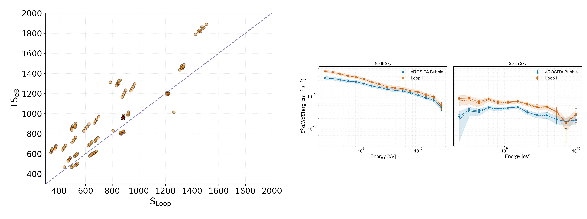
图注：Top: Comparison of cumulative template TS values for the eB and Loop I templates across the 64 GALPROP diffuse-emission templates. Each value is computed relative to the corresponding baseline model without the additional large-scale template. The benchmark model is highlighted by the red star, and the navy dashed line indicates equal likelihood improvement for the two non-nested spatial hypotheses.\ Bottom: SEDs obtained using the 64 GALPROP diffuse-emission templates for the northern (left panel) and southern (right panel) large-scale structures. Dashed lines indicate the ensemble mean, and shaded regions denote the $1\sigma$ spread across the diffuse-emission templates. The data points show the SEDs obtained with the benchmark background model, with circles and squares denoting the eB and Loop I templates, respectively.
对应解读：对应“建议重点查看的图表”第3、4、5项，以及“关键图表逐图导读”图3、图4和模型拟合段落中关于替代弥散背景、模板TS比较、系统误差包络的讨论。
入选理由：这张图同时给出64套GALPROP弥散背景下eB模板与Loop I模板的累计TS比较，以及南北结构SED在不同背景模型下的均值和1σ离散度，是检验本文核心结论稳健性的最关键图。它直接回答候选超额是否依赖单一背景模型、eROSITA填充模板是否普遍优于Loop I壳层模板、以及能谱系统误差有多大，科学价值高于单纯形态展示图。
来源与置信度：\(arxiv_source\)；high；\(arxiv_source\) / main.tex:figure[3]
Fig01
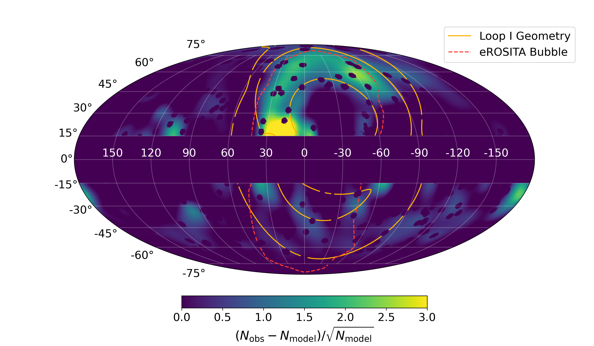
图注：{All-sky approximate residual-significance map of the large-scale gamma-ray residuals. This map is intended only to visualize the large-scale residual morphology after baseline-template subtraction and is not used as a formal detection statistic. The background color shows $(N_{\rm obs}-N_{\rm model})/\sqrt{N_{\rm model}}$, constructed from the residual counts after the template fit and summed over the analyzed energy bins. The northern and southern hemispheres are fitted separately and merged for visualization. A $10^\circ$ Gaussian smoothing kernel has been applied to highlight extended features.} The overlaid contours represent the spatial templates for Loop I (yellow solid lines, \cite{wolleben2007new}) and the eBs (red dashed lines, \cite{predehl2020detection}). The Galactic plane region ($|b| < 15^\circ$) is masked to reduce contamination from foreground modeling uncertainties, with all masked regions assigned a numerical value of zero for visualization purposes.
对应解读：对应“建议重点查看的图表”第1、2项，以及“关键图表逐图导读”图1和图2中关于全天/南半球残差图、eROSITA泡与Loop I模板轮廓叠加的讨论。
入选理由：这张全天残差显著性图展示了扣除基线模板后的大尺度伽马射线残差形态，并叠加Loop I和eROSITA泡轮廓，还标出银河盘掩膜。它最直观地支撑日报中关于南天是否存在连续数十度尺度超额、超额与eROSITA南泡及Loop I投影重叠程度的解读，是理解形态归属争议的基础图。
来源与置信度：\(arxiv_source\)；high；\(arxiv_source\) / main.tex:figure[1]
Fig02
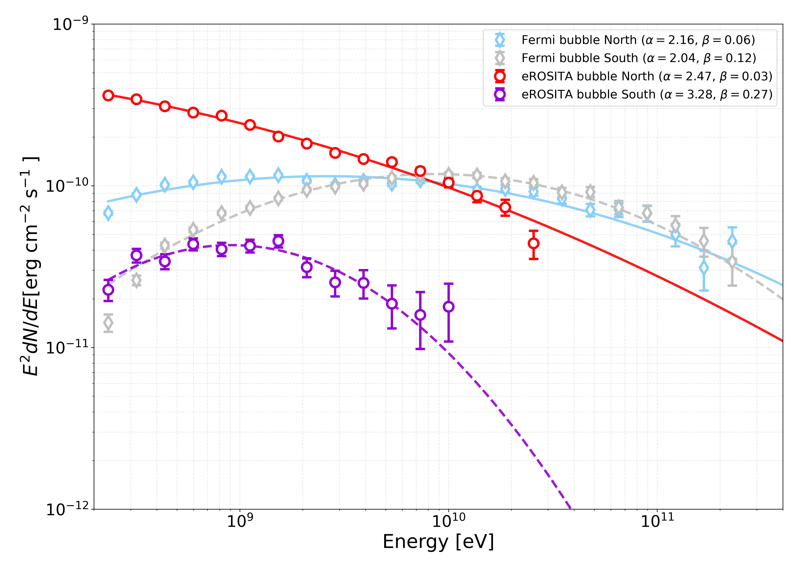
图注：Comparison of gamma-ray SEDs for the northern (solid lines) and southern (dashed lines) large-scale structures in our analysis. Data points represent extracted fluxes for the FBs (diamonds) and eBs (circles). The curves show the best-fit log-parabola models for the corresponding components, and the quoted $\alpha$ and $\beta$ values in the legend denote the best-fit parameters. Error bars represent $1\sigma$ nominal uncertainties.
对应解读：对应“建议重点查看的图表”第5、6项，以及“关键图表逐图导读”图5和图6中关于南侧候选结构能谱、南北大尺度成分谱形比较和南侧更暗更软的讨论。
入选理由：这张图直接比较北侧和南侧大尺度结构的SED，并给出FB与eB成分的数据点、最佳拟合log-parabola模型及谱形参数。它是验证南侧结构相对北侧更暗、更软这一物理结论的主要依据，也能检查谱点是否平滑、误差条是否由少数能段主导。
来源与置信度：\(arxiv_source\)；high；\(arxiv_source\) / main.tex:figure[2]
Fig04
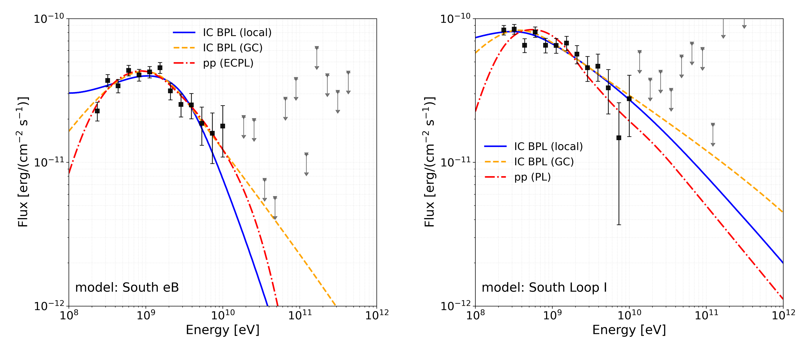
图注：Spectral energy distribution of the southern structure fitted with leptonic and hadronic models. The left and right panels show the SEDs derived with the southern eB and Loop I spatial templates, respectively. The leptonic scenario (inverse-Compton) assumes a BPL ($\gamma_1=1.5$) electron distribution. For the hadronic (pp) fits, a PL or ECPL proton distribution is adopted, with target gas densities assumed to be $n_{\text{H}} = 1.0 \text{ cm}^{-3}$ for the local components and $n_{\text{H}} = 10^{-3} \text{ cm}^{-3}$ for the Galactic-scale structure toward the GC. Upper limits are shown for reference and are not used in computing the model likelihoods reported in Table~\(\ref{tab:combined_fit}.\)
对应解读：对应模型拟合段落和详细解读中关于南侧结构的轻子逆康普顿与强子pp解释、能量学要求及eB/Loop I模板下物理模型差异的讨论。
入选理由：这张图把南侧结构SED分别用eB和Loop I空间模板提取后，再与轻子和强子辐射模型拟合相比较，支撑日报中关于强子解释能量学更苛刻、轻子IC更经济但需快速输运或局地再加速的讨论。虽然它不如Fig03直接决定探测稳健性和模板归属，但对物理解释部分很有价值。
来源与置信度：\(arxiv_source\)；high；\(arxiv_source\) / main.tex:figure[4]
强相关工作
这篇工作直接接在费米泡、eROSITA 泡和 Loop I 三条文献线之后。同类源/同类结构方面，应检索 “Fermi bubbles gamma-ray large-scale Galactic center outflow”、“eROSITA bubbles X-ray Galactic halo”、“Loop I North Polar Spur gamma-ray foreground”。费米泡发现论文提供了 GeV 双极结构的原型；eROSITA 泡论文提供了 X 射线形态先验；Loop I 与 North Polar Spur 文献则代表主要前景解释和距离争议。
与相反观点或张力相关的文献主要围绕两个问题：第一，费米泡和 eROSITA 泡是否同源，还是不同尺度、不同时代的反馈事件叠加；第二，North Polar Spur/Loop I 是本地结构还是银河中心外流的一部分。本文的结论偏向南侧 eROSITA 泡存在伽马射线对应体，但明确没有排除 Loop I 或局部前景。因此读者不应把它看成终局判定，而应看成在更长 Fermi-LAT 数据和多模板检验下，对南天大尺度超额归属的一次量化推进。
检索时还应加入方法关键词 “Fermi-LAT diffuse emission template fitting”、“alternative interstellar emission models”、“gamma-ray residual maps”、“inverse Compton Galactic halo”、“hadronic model Fermi bubbles”。这些关键词能找到关于弥散背景系统误差、宇宙线传播模型和泡状结构能量学的基础论文与争论论文。
同一事件 / 同类源线索：
相似工作：
基础理论 / 方法工作：
相反观点 / 张力线索：
2. Constraining the gamma-ray efficiency of LINER outflows with Fermi-LAT and MEGARA
- 来源：arXiv / astro-ph.HE
- 链接：https://arxiv.org/abs/2608.12015v1
- 作者：Alberto Domínguez, Alejandra León, Adithiya Dinesh, Armando Gil de Paz
- 评分：novelty 7/10，importance 8/10，relevance 10/10，final 9.40/10
- 推荐理由：Fermi-LAT约束LINER外流的GeV伽马射线效率，直接涉及AGN/低光度核的粒子加速和伽马射线起源；对解释VHE LINER探测有明确价值。
中文题目：用 Fermi-LAT 与 MEGARA 限制 LINER 外流的伽马射线辐射效率
做了什么：这篇文章把一组本地 LINER 星系的光学积分场运动学和 17 年 Fermi-LAT 伽马射线数据放在一起，问一个很具体的问题：LINER 中常见的延展电离气体外流，能不能像有效的高能粒子加速器那样产生可观的 GeV 伽马射线？作者用 MEGARA 光谱给出外流动能功率，用 Fermi-LAT 在 \(0.05\text{--}500\,\mathrm{GeV}\) 给出光度或 \(95\%\) 置信上限，并定义伽马射线效率 \(\eta=L_\gamma/\dot{E}_{\rm out}\)。结果是样本中没有源达到正式探测阈值 \(TS\geq16\)，只有三个源有 \(9 为什么重要：LINER 在近邻早型星系和低光度活动星系核中非常常见，但它们到底是“弱 AGN”、老年恒星电离、激波，还是多机制混合，一直有争议。近年某些 LINER 的高能或甚高能伽马射线候选探测使问题更尖锐：如果把伽马射线归因于低功率电离外流，所需效率可能异常高。本文重要之处在于，它没有只做源表匹配，而是把空间分辨的外流动能功率和长时标 LAT 似然分析直接相连，给出了 LINER 外流伽马射线效率的首批经验约束。 理论 / 观测 / 仪器方法价值：对理论而言，本文把 LINER 外流放到星暴超风、射电星系和低光度 AGN 的统一能量预算图上，约束了低马赫数或弱激波外流中宇宙线加速效率的可行范围。对观测而言，它展示了如何把光学积分场得到的 \(\dot{M}_{\rm out}\)、\(v_{\rm out}\)、\(\dot{E}_{\rm out}\) 与 LAT 的 \(L_\gamma\) 或上限结合，而不是只比较是否在伽马源表中出现。对方法而言，文章强调了非探测样本的上限、\(TS\) 阈值、背景模型和源混淆在低信号伽马射线研究中的决定性作用。 为什么应该关注：如果你关心低光度 AGN 的反馈、宇宙线加速、星系核喷流和外流之间的能量分工，这篇文章值得看。它提醒我们：看到 LINER 有外流，并不等于外流能高效地产生 GeV 伽马射线；看到伽马射线，也不能自动归因于延展外流。对未来 CTA、AMEGO/e-ASTROGAM 类 MeV--TeV 观测以及高分辨率光学/射电联合研究来说，这篇文章给出了一个清楚的判据：必须同时测量外流功率、核区紧凑喷流、星形成贡献和伽马射线上限，才能谈“效率”。 科学问题：LINER，即低电离核发射线区，在近邻星系中非常普遍，且许多对象显示电离气体非圆周运动、宽线翼或双峰结构，常被解释为核区外流或喷流-气体相互作用。问题在于，这些外流是否只是低速、低效率的反馈通道，还是能把相当一部分机械能转化为高能粒子并产生 \(\gamma\) 射线。这个问题在 NGC 4278 等 LINER 的甚高能报道之后变得更敏感，因为若把强 \(\gamma\) 射线归因于延展电离外流，会得到非常高、甚至接近或超过常规宇宙线加速预期的辐射效率。 作者怎么做：本文选取已有 MEGARA/GTC 空间分辨光谱运动学的本地 LINER 样本，从光学发射线速度场、速度弥散和外流区域尺度估计电离气体外流的质量外流率与动能功率。随后用 17 年 Fermi-LAT 数据在 \(0.05\text{--}500\,\mathrm{GeV}\) 进行似然分析，对每个源求 \(\gamma\) 射线光度或 \(95\%\) 置信上限，并用检验统计量 \(TS\) 判断是否有显著源信号。文章还把这些 LINER 放到光学外流功率与 \(\gamma\) 射线光度的图上，与星暴星系、星暴超风和射电星系作经验比较。 关键结果：样本中没有任何 LINER 达到作者采用的正式探测标准 \(TS\geq16\)。三个源出现 \(9 局限和下一步：本文的限制主要来自 LAT 灵敏度、近邻复杂背景、源混淆和外流功率估计的不确定性。电离气体只是多相外流的一部分，若分子气体、热 X 射线气体或不可见低密度相携带更多能量，\(\dot{E}_{\rm out}\) 会改变，从而影响 \(\eta\)。此外，LAT 的角分辨率难以区分核区紧凑喷流、星形成盘和延展外流。下一步需要更大 LINER 样本、更深的高能数据、射电 VLBI 约束紧凑喷流、X 射线核吸积诊断，以及多相气体外流功率的统一估计。 本文最关键的证据链从样本定义开始：作者不是从 Fermi 源表中挑 LINER，而是从已有 MEGARA 空间分辨光谱的本地 LINER 出发，因此每个对象都有可估计的电离外流运动学量。这一点很重要，因为若先按 \(\gamma\) 射线亮度选源，会天然偏向射电喷流或背景混淆对象，无法代表 LINER 外流总体。样本规模不大，但它的优势是每个源都有外流功率这一物理归一化量。 LAT 分析的核心观测量是每个目标在 \(0.05\text{--}500\,\mathrm{GeV}\) 的似然检验统计量 \(TS\)、积分能量通量以及由距离换算的 \(L_\gamma\) 或 \(95\%\) 上限。作者采用 \(TS\geq16\) 作为正式探测阈值，这大致对应弱源分析中约 \(4\sigma\) 量级的局部显著性，但实际显著性还会受自由参数数目、能谱假设和试验因子影响。结果没有一个 LINER 达到这个门槛，三个对象只有 \(9 效率约束来自 \(\eta=L_\gamma/\dot{E}_{\rm out}\)。若 LAT 上限 \(L_{\gamma,95}\) 仍大于 \(\dot{E}_{\rm out}\)，得到的只是 \(\eta_{95}>1\) 的弱限制，不能说明外流真的高效，只说明数据不够深。文章指出多数源正处于这种状态。NGC 1052 是例外：它的距离、背景、外流功率和 LAT 上限组合起来给出 \(\eta<41\%\)，成为样本中最有物理意义的约束。这个数值仍不算非常低，但已经足以说明“所有外流机械能都高效转为 GeV 辐射”的图像不可靠。 支撑结论的图表应包括 LAT \(TS\) 和通量上限表、每个源的 \(L_\gamma\) 或上限、MEGARA 得到的 \(\dot{E}_{\rm out}\)，以及 \(L_\gamma\) 对 \(\dot{E}_{\rm out}\) 或光学外流指标的比较图。最重要的不是某个边缘源的位置，而是 LINER 样本整体相对于星暴和射电星系序列的位置：若外流像星暴超风一样低效率，点会落在较低 \(L_\gamma/\dot{E}_{\rm out}\) 区域；若像紧凑喷流主导的射电核，则可能偏离这种关系。 系统误差方面，LAT 背景模型、邻近源、弥散辐射、能谱指数假设、能量阈值选择都会改变弱源 \(TS\) 和上限。外流功率则受电子密度、发射线几何、投影速度、外流半径和电离气体质量估计影响，系统误差可达数量级。本文的稳健性主要体现在把结论表述为经验上限而非精确效率测量：即便承认外流功率有不确定性，也很难把整个 LINER 群体变成高效率 \(\gamma\) 射线外流源。 LINER 是一种按光学窄发射线比值定义的核区光谱类型，典型特征是低电离线如 \([\mathrm{O\,I}]\)、\([\mathrm{N\,II}]\)、\([\mathrm{S\,II}]\) 相对 \(\mathrm{H}\alpha\) 较强。它们在本地星系中特别常见，尤其在早型星系和低星形成率星系中。历史上，LINER 曾被视为低光度 AGN 的重要表现，但后来发现老年恒星族、后渐近巨星分支恒星、电离激波和扩展弥散电离气体也能产生类似线比，因此“LINER 等于 AGN”是一个常见误区。 外流问题来自光谱运动学。积分场光谱能够把核区和周围几百秒差距到千秒差距尺度的速度场展开，若发射线显示宽翼、速度梯度、非盘旋转分量或速度弥散增强，通常会被解释为电离气体外流、喷流扰动或激波。外流是 AGN 反馈研究中的关键量，因为它连接黑洞吸积释放能量与星系气体调节。但在 LINER 这种低光度环境中，外流能量是否足以影响星系，以及是否能加速宇宙线，都远未确定。 伽马射线提供另一条检验路径。若外流激波能把质子或电子加速到相对论能量，质子-质子碰撞、逆康普顿散射或非热轫致辐射可以产生 GeV--TeV 光子。星暴星系中，\(\gamma\) 射线常被解释为宇宙线与星际气体相互作用的结果；射电星系中，\(\gamma\) 射线往往来自相对论喷流。LINER 处在这两类之间：它们可能有弱喷流、低效吸积流、老年恒星电离和小尺度外流，因此多机制混合特别严重。 为什么现在值得重新看？一方面，Fermi-LAT 的时间基线已经积累到十几年，弱源上限显著改善；另一方面，MEGARA、MUSE 等积分场仪器让近邻 LINER 的外流功率估计比早期长缝光谱可靠得多。更重要的是，若某个 LINER 被报告有甚高能 \(\gamma\) 射线信号，必须判断能量源是延展外流还是紧凑核喷流。本文正是在这个背景下，把光学外流与 GeV 数据直接配对，避免只根据源分类做推断。 该领域常见误区包括：第一，把 \(TS\) 边缘 excess 当成可靠探测；第二，把 LAT 角分辨率内的全部 \(\gamma\) 射线都归因于 LINER 核；第三，把电离气体外流功率当成总外流功率而忽视多相气体；第四，把高 \(L_\gamma/\dot{E}_{\rm out}\) 解释为高效率，而不检查 \(\dot{E}_{\rm out}\) 是否低估或 \(\gamma\) 射线是否来自喷流、星形成或背景源。 基本物理图像是机械能如何进入非热粒子。外流携带质量、动量和动能，若它与周围星际介质相互作用，会形成激波或湍流层。激波中的一部分能量可通过扩散激波加速进入相对论粒子，粒子再通过强子过程或轻子过程产生 \(\gamma\) 射线。效率 \(\eta\) 不是一个基本常数，而是外流能量注入、粒子加速、逃逸、冷却和辐射通道共同决定的结果。 本文使用的关键经验量是外流动能功率 \(\dot{E}_{\rm out}\) 与伽马射线光度 \(L_\gamma\)。前者来自光学积分场光谱：通过发射线亮度估计电离气体质量，通过速度偏移和线宽估计外流速度，通过外流半径估计流动时间或质量外流率。后者来自 Fermi-LAT 似然分析：给定源位置、能谱模型、仪器响应和背景模型，比较有源模型与无源模型的似然，得到 \(TS\)、通量或上限。 观测上最大的困难是两类量的系统误差完全不同。\(\dot{E}_{\rm out}\) 对电子密度、填充因子、几何形状、投影角和速度定义非常敏感；\(L_\gamma\) 对背景弥散模型、邻近点源、能谱指数、能量范围和长期变源处理敏感。因此 \(\eta\) 的误差不能只按统计误差传播，它很可能有数量级级别的不确定性。 模型假设方面，作者并不需要指定详细宇宙线谱演化模型，而是采用能量预算式检验：若延展电离外流是主要 \(\gamma\) 射线能量源，则应满足 \(L_\gamma\lesssim\dot{E}_{\rm out}\)，且合理效率通常远小于 \(1\)。如果上限已经低于某些理论预期，就可排除高效率外流；如果上限高于 \(\dot{E}_{\rm out}\)，则只是未能检验该模型。这个策略适合非探测样本，但不能单独证明 \(\gamma\) 射线不存在。 退化关系也很清楚：紧凑核喷流可以在 LAT 点扩散函数内伪装成外流 \(\gamma\) 射线；低水平星形成也可能贡献宇宙线强子辐射；背景 blazar 或未建模弥散结构可抬高 \(TS\)。反过来，如果外流主要在 TeV 能段辐射，或宇宙线快速逃逸，GeV 上限也未必强。本文的价值在于把这些复杂性压缩到可检验的 \(L_\gamma\)–\(\dot{E}_{\rm out}\) 平面上。 第一步是外流机械能。若电离气体外流质量为 \(M_{\rm out}\)，特征速度为 \(v_{\rm out}\)，半径为 \(R_{\rm out}\)，流动时间可写成 这里 \(t_{\rm dyn}\) 是动力学时标，假设气体以近似定常速度从核区流到观测到的外流尺度。 质量外流率通常由 估计，其中 \(C_{\rm geom}\) 是几何因子，取决于薄壳、填充锥或连续流模型。该式说明同样的气体质量，若半径更小或速度更大，会给出更高的瞬时外流率。 动能功率定义为 有时还会加入湍动或速度弥散项，例如把有效速度写作 \(v_{\rm eff}^{2}=v_{\rm bulk}^{2}+\kappa\sigma^{2}\)。本文关心的是与 \(\gamma\) 射线光度比较的能量注入率。 电离气体质量可由复合线光度估计，一个常用标度是 其中 \(L_{\mathrm{H}\alpha}\) 是 \(\mathrm{H}\alpha\) 光度，\(n_e\) 是电子密度，\(\alpha_{\rm eff}\) 是有效复合系数，\(h\nu_{\mathrm{H}\alpha}\) 是单个 \(\mathrm{H}\alpha\) 光子的能量。这一步解释了为什么 \(n_e\) 是外流功率的主要系统误差源。 LAT 测到的是能量通量。若源光子谱为 \(dN/dE\)，积分能量通量为 其中本文能段为 \(E_{\min}=0.05\,\mathrm{GeV}\)、\(E_{\max}=500\,\mathrm{GeV}\)。给定距离 \(D\)，各向同性等效光度为 这是假设源在 LAT 角分辨率内不可分辨且无强各向异性修正的经验光度。 效率定义为 非探测时使用上限 若 \(\eta_{95}<1\)，观测已经排除把全部外流机械能转为该能段 \(\gamma\) 射线；若 \(\eta_{95}\gg1\)，则上限尚无强物理约束。 LAT 似然可写成泊松形式 其中 \(n_i\) 是第 \(i\) 个空间-能量 bin 的观测计数，\(\mu_i\) 是源模型、弥散背景、邻近源和仪器响应卷积后的期望计数。 检验统计量定义为 其中 \(\mathcal{L}_{\rm src}\) 是包含目标源的最大似然，\(\mathcal{L}_{\rm null}\) 是不包含目标源的最大似然。在理想大样本条件下，\(\sqrt{TS}\) 可近似理解为高斯显著性，但弱源、边界参数和多重试验会使这个近似变粗糙。 本文的拟合分成两层。第一层是光学运动学建模或参数化估计：从 MEGARA 积分场数据中分离窄线、宽线翼或非旋转分量，测量发射线通量、速度偏移、速度弥散和外流区域大小。拟合量包括线中心、线宽、线通量以及可能的多高斯成分。残差图应检查是否存在未拟合的非对称线翼、空间上连续的高 \(\sigma\) 区域，以及是否把盘旋转误判成外流。 第二层是 LAT 似然拟合。通常需要在感兴趣区域内放入目标源、4FGL 邻近源、银河弥散模板和各向同性背景，并假设目标能谱，例如幂律谱。拟合输出包括归一化、谱指数或固定谱指数下的通量上限、\(TS\) 和源位置附近的残差图。由于本文目标均为弱源或非探测源，通量上限比最佳拟合通量更关键。 参数退化主要有两类。外流侧，\(M_{\rm ion}\) 与 \(n_e\) 近似反比，\(\dot{E}_{\rm out}\) 又随 \(v_{\rm out}^{3}/R_{\rm out}\) 级别变化，因此电子密度、投影角和速度定义会导致大幅差异。LAT 侧，弱源通量与弥散背景归一化、邻近源谱形和目标谱指数退化；尤其在低能 \(0.05\text{--}0.2\,\mathrm{GeV}\)，点扩散函数较宽，背景和源混淆更严重。 看拟合残差时，读者应关注两个问题：目标位置是否有空间上集中的正残差，以及该残差是否在多个能段都一致。若 \(TS\) 主要由低能宽点扩散函数贡献，或由某个时间段的变源贡献，则不宜解释为稳定延展外流。若源附近存在射电响核或已知 blazar 候选，紧凑喷流解释应优先检查。 模型可能失败的地方在于把复杂多相系统压缩为单一 \(\dot{E}_{\rm out}\) 和单一 \(L_\gamma\)。如果主要机械能在分子外流或热风中，而不是电离气体中，效率会被高估；如果 \(\gamma\) 射线来自亚秒差距喷流，拿它除以千秒差距电离外流功率也没有物理意义。本文的实用价值正是提醒读者：\(\eta\) 是一个诊断量，不是自动揭示辐射机制的充分证据。 数据与样本部分应首先阅读。这里需要确认 LINER 样本如何选取、MEGARA 观测覆盖哪些空间尺度、每个源是否有清晰的电离外流证据，以及样本是否偏向射电响或近距离对象。读者应特别记录每个源的距离、外流半径和外流功率，因为这些量直接决定效率上限的物理含义。 光学外流功率估计部分是第二个重点。应检查作者如何从发射线分解得到外流分量，采用了什么电子密度、几何因子和速度定义。若论文给出不同假设下的 \(\dot{M}_{\rm out}\) 或 \(\dot{E}_{\rm out}\)，应优先看系统误差范围，而不是只引用表中中心值。 Fermi-LAT 分析部分是第三个重点。读者应看数据时间跨度、能段、事件类别、感兴趣区域大小、背景模型、邻近源处理和目标源能谱假设。对非探测论文而言，\(95\%\) 上限的计算方法与 \(TS\) 阈值同样重要。 结果部分应重点看 \(TS\)、通量上限、\(L_\gamma\) 和 \(\eta\) 表格，以及光学/\(\gamma\) 射线比较图。不要只看三个边缘 \(9 讨论部分应关注作者如何区分外流、喷流和星形成贡献。尤其对 NGC 1052 这类射电响 LINER，紧凑喷流本来就是强候选机制，因此 \(\eta<41\%\) 的解释不能简单写成“外流效率低”，而应理解为“延展电离外流难以独自解释高效 \(\gamma\) 射线”。 样本和 MEGARA 运动学图：看发射线通量、速度场和速度弥散图，确认所谓外流是否空间连续、是否与盘旋转或束流涂抹混淆。 发射线剖面分解图：看窄成分与宽成分的残差，尤其是 \(\mathrm{H}\alpha\)、\([\mathrm{N\,II}]\) 和 \([\mathrm{S\,II}]\) 是否需要额外宽翼；这是 \(M_{\rm out}\) 和 \(v_{\rm out}\) 的基础。 LAT \(TS\) 图或残差显著性图：看目标位置是否有局部 excess，是否与邻近 4FGL 源或银河弥散结构混在一起。 LAT 光谱能量分布或通量上限图：看各能段上限是否由某几个低能 bin 主导，以及模型幂律是否只是用于积分上限而非真实谱测量。 \(L_\gamma\)–\(\dot{E}_{\rm out}\) 或光学/\(\gamma\) 射线比较图：看 LINER 上限与星暴星系、星暴超风、射电星系的位置关系，尤其是 \(\eta=1\)、\(0.1\)、\(0.01\) 等参考线。 效率 \(\eta\) 表：看哪些源给出 \(\eta_{95}<1\) 的物理限制，哪些只是 \(\eta_{95}\gg1\) 的非约束上限。NGC 1052 应单独检查。 图 1：若论文给出样本的 MEGARA 发射线或运动学图，横纵轴通常是相对核区的角距离或物理距离，颜色表示线通量、视向速度或速度弥散。读图时应看高速度弥散区域是否沿某一轴向延展，是否与射电结构或双锥形态一致。陷阱是把中心点扩散函数造成的线宽增大直接解释为外流。 图 2：发射线拟合示例通常以波长为横轴、通量密度为纵轴，展示观测谱、窄成分、宽成分和残差。关键是宽成分是否在多条线中一致出现，而不是只在单条线中由噪声或模板不匹配造成。若残差仍有系统结构，外流质量和速度可能偏差较大。 图 3：LAT \(TS\) map 或残差图通常以天球坐标为两轴，颜色代表 \(TS\) 或残差计数。应检查目标位置是否落在 excess 峰值中心，周围是否有已知 Fermi 源，模型扣除后是否还存在大尺度残差。读图陷阱是看到 \(TS\sim10\) 的斑点就称为探测；在弱源和多目标搜索中这只应称为边缘信号。 图 4：若有 \(\gamma\) 射线谱能量分布，横轴为能量，纵轴为 \(E^{2}dN/dE\) 或能量通量。非探测源通常显示一系列上限箭头和最佳拟合幂律线。应看积分上限是否被低能点扩散函数宽、背景高的能段支配，也要看谱指数假设改变时上限是否稳定。 图 5：光学外流功率与 \(\gamma\) 射线光度比较图是本文的核心图。横轴可为 \(\dot{E}_{\rm out}\) 或相关光学外流指标，纵轴为 \(L_\gamma\) 或其上限；LINER 多为上限箭头，星暴和射电星系为对照点。关键读法是比较点到 \(L_\gamma=\dot{E}_{\rm out}\) 参考线的距离。若上限高于该线，约束弱；若低于该线，才真正排除高效率外流。 图 6：效率或源表汇总图若存在，应重点看 NGC 1052 与其他源的差异。NGC 1052 的 \(\eta<41\%\) 是样本中较强约束，但它本身又是射电响 LINER，因此任何 \(\gamma\) 射线解释都必须同时考虑紧凑喷流。陷阱是把这个单源限制推广成所有 LINER 都已被 LAT 严格约束。 Fig01 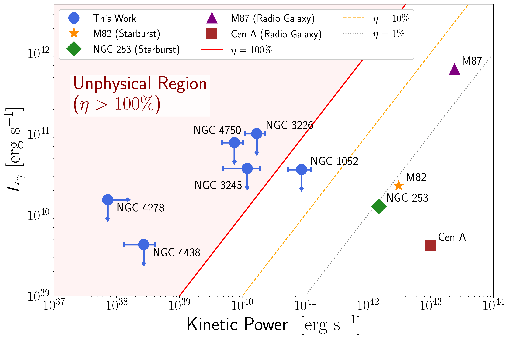 这篇工作与几类文献直接相连。第一类是 LINER 的定义、物理来源和低光度 AGN 综述，检索关键词可用 “LINER low ionization nuclear emission-line regions review”、“low luminosity AGN LINER excitation mechanisms”。第二类是近邻星系核电离气体外流的积分场研究，检索关键词包括 “MEGARA LINER outflows”、“MUSE LINER ionized gas kinematics”、“ionized outflow kinetic power low luminosity AGN”。这些工作提供 \(\dot{E}_{\rm out}\) 的测量基础。 第三类是 \(\gamma\) 射线星暴星系和射电星系研究。星暴系统给出低到中等效率的宇宙线-气体相互作用基准，射电星系则提供紧凑喷流主导 \(\gamma\) 射线的参照。本文与这些工作的关系不是简单分类，而是把 LINER 放进同一能量预算图，判断其更像低效率超风还是喷流核。检索关键词可用 “Fermi LAT starburst galaxies gamma rays”、“Fermi LAT radio galaxies misaligned AGN”、“gamma-ray emission LINER NGC 1052 NGC 4278”。 潜在张力来自少数 LINER 或低光度 AGN 的高能/甚高能候选探测。如果这些探测要求 \(L_\gamma\) 接近或超过延展外流功率，就会与本文“外流低效率”的群体图像冲突；但这种冲突也可能说明 \(\gamma\) 射线来自核区喷流，或外流功率被低估，或候选探测受背景影响。读者应把 “same-source NGC 1052 gamma-ray”、“same-source NGC 4278 VHE”、“LINER compact jet gamma-ray” 作为后续检索词。 同一事件 / 同类源线索： 相似工作： 基础理论 / 方法工作： 相反观点 / 张力线索： （未提供） 中文题目：AGN 盘中嵌入式 GRB 喷流的高能中微子信号：一个动态喷流传播框架 做了什么：这篇论文研究发生在活动星系核吸积盘内部的相对论 GRB 喷流能否成为高能中微子源。作者没有把喷流简化为某一个固定状态，而是沿着喷流头在盘内传播的轨迹，逐时计算喷流头速度、反向激波耗散、粒子冷却和中微子产生，直到喷流窒息或冲出盘面。核心结论是：窒息喷流的中微子产额通常由接近停滞时的高耗散阶段主导，因此“停滞态近似”可在约 \(14\%\) 内复现完整轨迹积分的探测器加权事件数；但成功突破的喷流会在陡密度梯度中快速加速，反向激波耗散被压低，单状态估计会系统性高估中微子流量。论文还指出，不同 AGN 盘模型、超大质量黑洞质量和盘半径会给出明显不同的可探测性分布，某些低密度外盘环境可产生延伸到 \(10\)--\(100\,\mathrm{PeV}\) 的硬谱尾。 为什么重要：AGN 盘内瞬变源是解释 IceCube 高能中微子、GRB 中微子非探测结果以及多信使瞬变源多样性的热门场景之一。过去很多估计把嵌入式喷流看成一个代表性状态，但这篇文章显示，喷流是否窒息、何时停滞、是否穿越陡密度梯度，会直接改变反向激波能量注入和最终中微子谱。因此，如果不处理传播动力学，理论上可能把可探测性、能谱峰值和事件率都估错。 理论 / 观测 / 仪器方法价值：它的价值主要在方法上：把 AGN 盘结构、喷流头传播、激波耗散、质子加速、介子和缪子冷却、以及探测器加权事件数放进同一个时间依赖框架。对理论工作者来说，它给出了何时可以用停滞态近似、何时必须做完整轨迹积分的判据；对观测解释来说，它提醒读者不要只用总能量预算判断中微子亮度，还要看喷流传播阶段的耗散效率和谱形演化。 为什么应该关注：如果你关心 IceCube、IceCube-Gen2、KM3NeT 或未来超高能中微子实验能否看到来自 AGN 盘内 GRB、恒星坍缩或并合相关喷流的信号，这篇文章值得看。它告诉我们，同样的喷流能量放在不同盘模型和半径上，可能从强 PeV 中微子源变成几乎不可见；而某些外盘低密度环境则可能把信号推向 \(10\)--\(100\,\mathrm{PeV}\)，这对未来探测器设计和源族群模拟都有直接影响。 科学问题：论文要解决的是，AGN 吸积盘内部的 GRB 型相对论喷流在传播过程中如何产生高能中微子，以及常见的“单一代表状态”估计是否可靠。AGN 盘不是均匀介质，密度、温度、尺度高和辐射场随半径和高度快速变化。嵌入其中的喷流头速度、反向激波强度、内部能量密度和冷却条件都会随时间变化。若喷流在盘内窒息，能量主要沉积在盘气体中；若喷流突破盘面，喷流头可能在外层密度下降处快速加速。两种情况下，中微子产额和谱形不是简单由总喷流能量决定。 作者怎么做：他们建立了一个动态喷流传播框架，跟踪喷流头穿过 AGN 盘时的轨迹。框架中包括喷流头推进速度、反向激波区域的热化和非热质子注入、质子与光子或质子与质子相互作用产生介子、介子和缪子在衰变前的冷却，以及最终到达地球的中微子能谱。论文把该框架应用到两类常用 AGN 盘模型，即 SG 盘模型和 TQM 盘模型，并扫描超大质量黑洞质量、盘内半径和喷流参数，比较窒息与突破两类结局。 关键结果：对于代表性窒息喷流，中微子发射由喷流头接近停滞时的高耗散阶段主导。因为这个阶段反向激波强、物质密度高、相互作用效率大，所以把喷流近似为“停滞态”可以较好复现完整轨迹积分的探测器加权事件数，偏差约在 \(14\%\) 量级。相反，对于突破喷流，喷流头在盘外层的陡峭密度梯度中会快速加速，反向激波耗散下降，单状态模型即使修正可用能量预算，仍可能高估中微子 fluence。完整轨迹积分还会改变高能谱尾，特别是在较低密度外盘环境中，谱尾可延伸到 \(10\)--\(100\,\mathrm{PeV}\)。 局限和下一步：这类计算仍依赖 AGN 盘模型、喷流初始开角、喷流能量、持续时间、重子负载、磁场参数和非热粒子加速效率。SG 与 TQM 模型代表了两类环境，但真实 AGN 盘可能有湍流、碎裂、辐射反馈、磁驱动风和非轴对称结构。论文的结果说明动力学不可忽略，下一步应把该框架嵌入源族群合成和探测器响应模拟，并与 IceCube 已有非探测上限、未来 IceCube-Gen2 和超高能中微子阵列灵敏度联合比较。 本文最重要的证据链从样本构造开始：作者不是处理一个已观测到的单一事件，而是在理论上选取嵌入 AGN 盘的 GRB 型喷流参数，并把它们放入两类盘模型中演化。样本维度包括 AGN 盘模型、超大质量黑洞质量、源在盘内的半径、喷流是否窒息或突破、以及喷流沿高度方向穿过的局地密度和辐射场。这里的“事件数”不是观测样本计数，而是通过中微子 fluence 与探测器有效面积卷积得到的预期探测事件数 \(N_{\nu}\)。 计算的核心是把喷流轨迹离散为多个传播阶段。每个阶段都有不同的喷流头速度、反向激波能量密度、磁场、目标光子场或气体密度，以及质子、介子、缪子的冷却时间。作者对每个阶段计算瞬时中微子谱，再沿时间积分，得到完整轨迹的总 fluence。然后他们把这个结果与若干单状态近似比较，尤其是对窒息喷流使用停滞态近似，对突破喷流使用某个代表传播状态近似。 显著性在这篇理论论文中主要表现为模型间偏差和探测器加权事件数差异，而不是观测发现的 \(p\)-value。关键指标是完整轨迹积分给出的 \(N_{\nu}\) 与单状态估计给出的 \(N_{\nu}^{\mathrm{1zone}}\) 之比，以及中微子谱在 PeV 到 \(100\,\mathrm{PeV}\) 区间的形状变化。对窒息案例，停滞态近似能在约 \(14\%\) 内复现完整结果，这说明中微子产额的时间积分被接近停滞的短暂高耗散阶段控制。对突破案例，单状态估计会明显高估 fluence，因为它没有捕捉到喷流头加速后反向激波耗散快速减弱的阶段。 支撑结论的图表应包括三类：第一，喷流头位置、速度或洛伦兹因子随时间或高度的演化；第二，不同传播阶段的中微子瞬时谱和轨迹积分谱；第三，按黑洞质量和盘半径绘制的探测器加权事件数或可探测性图。读者应特别比较 SG 与 TQM 盘模型在同一半径下的密度梯度差异，以及这些差异如何映射到窒息边界、突破边界和谱尾硬度。 系统误差主要来自盘模型和微物理参数。盘密度决定喷流头推进和 \(pp\) 相互作用效率，辐射场决定 \(p\gamma\) 过程和高能粒子冷却，磁场决定同步冷却能否压低高能介子和缪子衰变。稳健性检验应看作者是否比较了不同单状态选取、是否单独检验能量预算修正、是否展示了窒息与突破边界附近的连续变化，以及探测器权重改变后结论是否仍成立。 研究对象是嵌入 AGN 吸积盘的相对论喷流。AGN 盘可以捕获或容纳恒星、致密天体、双星并合产物和大质量恒星坍缩事件；这些瞬变源若产生 GRB 类喷流，喷流首先不是在稀薄星际介质中传播，而是在高密度、高辐射、高光深的盘气体内传播。这样的环境天然有利于高能强子相互作用，因此常被认为是 IceCube 高能中微子的潜在源族群。 历史问题在于 GRB 中微子模型与观测之间存在长期张力。经典长 GRB 火球模型曾预言可观的 PeV 中微子信号，但 IceCube 对明亮 GRB 的堆叠搜索给出了严格上限，使得标准外显 GRB 难以贡献全部弥散中微子背景。于是，人们转向“暗”或“隐藏”瞬变源，例如窒息喷流、低光度 GRB、超新星包层内喷流、潮汐瓦解事件喷流和 AGN 盘内嵌入喷流。这些源可以在电磁波段被遮蔽，却仍通过中微子逃逸。 为什么现在值得重新看：一方面，IceCube 已积累多年高能中微子样本，并且未来 IceCube-Gen2、KM3NeT、Baikal-GVD 和射电超高能中微子实验会扩展能区和有效体积；另一方面，AGN 盘内瞬变源的理论兴趣上升，因为它们也与 LIGO/Virgo/KAGRA 探测到的致密双星并合、AGN 盘辅助并合通道、以及核区瞬变源有关。若这些瞬变源能产生喷流，那么 AGN 盘同时提供了强相互作用靶场和复杂传播环境。 常见误区是把“高密度环境”直接等同于“高中微子亮度”。实际上，高密度也可能让喷流过早窒息、让非热粒子严重冷却、让介子和缪子在衰变前损失能量，从而压低高能中微子。另一个误区是只看总喷流能量 \(E_{j}\)，忽略能量何时、何地、以多高效率进入反向激波和非热质子。本文正是强调：传播动力学决定了能量耗散的时间分布，而不是一个可有可无的细节。 基本物理图像是：一个相对论喷流以功率 \(L_{j}\)、开角 \(\theta_{j}\) 和初始洛伦兹因子 \(\Gamma_{j}\) 注入 AGN 盘。喷流头前方的盘气体被正向激波扫起，喷流物质在反向激波中减速并热化。若喷流头推进速度低于喷流物质速度，反向激波会持续耗散喷流动能，为质子加速和中微子产生提供能量库。 中微子产生主要来自高能质子与目标物质或光子相互作用。\(pp\) 相互作用在高气体密度环境中有效，\(p\gamma\) 相互作用在强辐射场或高能质子条件下重要。两者都产生带电介子，带电介子衰变为缪子和中微子，缪子进一步衰变产生更多中微子。最终单个中微子的典型能量约为母质子能量的几百分之一到几十分之一，具体取决于反应通道和冷却过程。 本文特定的关键假设是，喷流传播不是静态的。喷流头速度由喷流动量通量与外部盘气体惯性阻力的竞争决定，而外部密度 \(\rho(z)\) 随高度 \(z\) 变化。反向激波的能量密度、磁场强度、目标光子密度和加速时间都随 \(z\) 或时间 \(t\) 改变。因此，瞬时中微子发射率 \(Q_{\nu}(E_{\nu},t)\) 必须沿喷流轨迹积分，而不能简单取某一固定 \(t\) 的状态乘以持续时间。 观测上真正相关的不是源端总中微子能量，而是到达地球后的 fluence 与探测器有效面积 \(A_{\mathrm{eff}}(E_{\nu},\delta)\) 的卷积。高能谱尾是否落在 IceCube 或未来探测器灵敏能区，会显著改变预期事件数。常见退化包括 \(L_{j}\)、\(\theta_{j}\)、盘密度和非热质子效率之间的退化：提高 \(L_{j}\) 可让喷流更易突破，但也可能降低在高密度区的停留耗散；提高密度可增强 \(pp\) 相互作用，却也可能增强冷却和窒息。 第一步是写出喷流能量注入。若喷流持续时间为 \(t_{j}\)，各向真实喷流能量为 其中 \(L_{j}\) 是喷流真实功率，\(t_{j}\) 是中心引擎活动时间。这个量给出总能量预算，但本文强调它不能单独决定中微子产额。 第二步估计喷流头推进。常用无量纲头部参数可写作 其中 \(\Sigma_{j}(z)\) 是喷流横截面积，\(\rho_{a}(z)\) 是 AGN 盘在高度 \(z\) 处的环境密度，\(c\) 是光速。\(\tilde{L}\) 衡量喷流动量通量相对外部介质惯性的强弱。 第三步给出喷流头速度的近似标度： 其中 \(\beta_{h}=v_{h}/c\)，\(\beta_{j}=v_{j}/c\)。当 \(\tilde{L}\ll 1\) 时喷流头慢、容易窒息；当 \(\tilde{L}\gg 1\) 时喷流头接近喷流速度，可能突破盘面。 第四步把传播写成时间积分： 其中 \(z_{h}(t)\) 是喷流头位置。若在 \(t_{j}\) 内无法到达盘尺度高附近的逃逸高度 \(H\)，则喷流倾向于窒息；若 \(z_{h}(t_{j})\gtrsim H\)，则可突破。 第五步描述可用于非热粒子的耗散功率。反向激波可用的瞬时功率可概念性写作 其中 \(\epsilon_{\mathrm{rs}}(t)\) 是反向激波耗散效率，取决于喷流头和未激波喷流之间的相对速度。本文的关键点是 \(\epsilon_{\mathrm{rs}}(t)\) 在停滞阶段可很高，而在快速突破阶段会下降。 第六步写非热质子注入： 这里假设质子谱近似为 \(E_{p}^{-2}\)，\(\epsilon_{p}\) 是进入非热质子的能量分数，\(E_{p,\min}\) 和 \(E_{p,\max}\) 是最低和最高质子能量。 第七步比较相互作用和冷却效率。对任一通道 \(x\in\{pp,p\gamma\}\)，可定义 其中 \(t_{\mathrm{dyn}}\) 是局地动力学时间，\(t_{x}\) 是相互作用时间。\(f_{x}\) 接近 \(1\) 表示强子能量高效转化为介子。 第八步考虑介子或缪子冷却对中微子谱的抑制。可写一个衰变前存活因子 其中 \(i\) 可为 \(\pi\) 或 \(\mu\)，\(t_{\mathrm{cool}}^{i}\) 是同步、逆康普顿或强子冷却时间，\(t_{\mathrm{dec}}^{i}\) 是衰变时间。若冷却快于衰变，高能中微子会被压低。 第九步把瞬时源端中微子谱积分为到地球的 fluence： 其中 \(D_{L}\) 是光度距离，\(z_{s}\) 是源红移，\(Q_{\nu}\) 是源端中微子产生率。完整轨迹积分与单状态近似的差别就在这个时间积分中。 第十步得到探测器加权事件数： 其中 \(A_{\mathrm{eff}}\) 是随能量和赤纬 \(\delta\) 变化的有效面积。本文用类似量比较不同盘模型和传播情形的可探测性，说明谱形变化和能区迁移会直接影响观测预期。 这篇论文本身更接近理论建模和参数扫描，而不是对一个观测数据集做后验拟合。被“拟合”或求解的核心量是喷流头轨迹 \(z_{h}(t)\)、喷流头速度 \(\beta_{h}(t)\)、反向激波耗散功率 \(L_{\mathrm{diss}}(t)\)、各粒子冷却时间、瞬时中微子产生率 \(Q_{\nu}(E_{\nu},t)\) 和最终事件数 \(N_{\nu}\)。模型输入包括盘模型、黑洞质量、盘半径、喷流功率、持续时间、开角和微物理效率。 如果把该框架用于真实数据，似然通常会建立在预期中微子事件数和能量分布上。对单源搜索，可用泊松似然比较源模型加背景与纯背景：观测量包括事件能量 proxy、到源方向的角距离和时间窗。对弥散背景，可把源族群积分后的通量与 IceCube 能谱点或未折叠事件分布比较。本文目前的重点是给出从物理参数到 \(N_{\nu}\) 的前向模型，并指出单状态模型的系统偏差。 参数退化很重要。更大的 \(L_{j}\) 增加能量预算，也提高 \(\tilde{L}\)，使喷流更容易突破；但突破后反向激波耗散可能下降，导致中微子产额未必按 \(L_{j}\) 线性增加。更大的盘密度增强 \(pp\) 相互作用效率，却可能降低喷流头速度、增强二级粒子冷却并改变谱峰。磁场越强，质子最高能量可能受限，介子和缪子的同步冷却也更强，高能谱尾会被削弱。 残差或诊断应看三类差异。第一是完整轨迹积分与单状态近似的事件数比值，它直接衡量模型简化误差。第二是谱形残差，尤其在 PeV 以上能区，单状态模型可能给出错误的高能尾。第三是窒息和突破边界附近的行为，因为这里小的盘密度或喷流参数变化会造成结局突变。 模型可能失败的地方包括：真实 AGN 盘具有三维湍流、磁化、盘风和碎裂结构；喷流可能不是固定开角，而会被盘压强准直；非热质子加速效率和磁场能量分数不一定恒定；目标光子场可能有非局地辐射传输贡献。实际应用时应把这些作为系统误差或超参数，而不是把 SG 或 TQM 盘模型当成唯一真实环境。 引言和问题设定：读者应先看作者如何定义“嵌入 AGN 盘的 GRB 喷流”以及为什么单状态估计可能有问题。重点不是 GRB 是否能产生中微子这一老问题，而是 AGN 盘环境中传播动力学如何改变中微子效率。 AGN 盘和喷流传播模型：这一部分应关注 SG 与 TQM 盘模型给出的密度、温度、尺度高和辐射场差异。读者需要确认喷流头速度、窒息条件和突破条件如何由局地 \(\rho_{a}(z)\) 与喷流参数决定。 粒子加速与冷却计算：这里要看作者如何处理反向激波耗散、非热质子注入、\(pp\) 与 \(p\gamma\) 相互作用、介子和缪子冷却。尤其要检查最高能量 \(E_{p,\max}\) 的确定方式，以及高能中微子谱尾是否由加速极限还是二级粒子冷却决定。 完整轨迹积分与单状态近似比较：这是论文的核心结果段。读者应逐项比较窒息案例和突破案例中，完整积分谱、停滞态近似谱、代表性单状态谱之间的差别。约 \(14\%\) 的一致性只适用于代表性窒息情形，不能外推到所有突破情形。 参数空间和可探测性：最后应看不同黑洞质量、盘半径和盘模型下的 \(N_{\nu}\) 分布。重点是哪些区域产生 PeV 信号，哪些区域给出 \(10\)--\(100\,\mathrm{PeV}\) 硬尾，以及未来实验相对当前 IceCube 的收益在哪里。 AGN 盘结构图或剖面：检查 SG 与 TQM 模型的密度 \(\rho_{a}\)、温度、尺度高 \(H\) 随半径或高度的变化，尤其看外盘密度梯度是否足够陡。 喷流头动力学演化图：看 \(z_{h}(t)\)、\(\beta_{h}(t)\) 或相关洛伦兹因子如何变化。窒息案例应表现为推进减慢或停滞，突破案例应在外层快速加速。 反向激波耗散功率图：检查 \(L_{\mathrm{diss}}(t)\) 或耗散效率是否在停滞阶段达到峰值，以及突破阶段为何下降。 瞬时与积分中微子谱：比较不同传播时刻的 \(E_{\nu}^{2}\mathcal{F}_{\nu}\) 与完整积分谱，看高能尾由哪些阶段贡献。 单状态近似误差图：看完整轨迹积分的 \(N_{\nu}\) 与停滞态或代表状态近似的比值，确认 \(14\%\) 结论适用范围。 参数空间可探测性图：检查横轴和纵轴是否为黑洞质量、盘半径或源位置，颜色是否表示 \(N_{\nu}\) 或 fluence；重点看 SG 与 TQM 的差异。 冷却时间比较图：若有，应看加速时间、动力学时间、\(pp\)、\(p\gamma\)、同步冷却和衰变时间的交点，这决定谱截断和硬尾。 图 1：通常应是 AGN 盘模型或喷流几何示意。若横轴是盘半径或高度，纵轴是密度、温度或尺度高，读者要看 SG 与 TQM 曲线的相对位置和斜率。读图陷阱是只比较某一点密度大小，而忽略喷流沿高度穿过的是一个梯度；突破案例中梯度比局地点值更关键。 图 2：应关注喷流头传播轨迹，横轴可能是时间 \(t\) 或高度 \(z\)，纵轴可能是 \(z_{h}\)、\(\beta_{h}\) 或 \(\Gamma_{h}\)。窒息曲线会趋于停滞或在引擎关闭前未达盘面；突破曲线则在外层出现加速。陷阱是把喷流头速度等同于原始喷流洛伦兹因子，实际上两者由头部动量平衡联系但不相同。 图 3：若展示反向激波或耗散功率，横轴通常为时间或传播位置，纵轴为 \(L_{\mathrm{diss}}\)、能量密度或耗散效率。关键看高耗散峰是否与喷流停滞位置重合。对窒息喷流，中微子产额被峰值附近主导；对突破喷流，外层加速后耗散减弱，单状态模型容易误判。 图 4：中微子能谱图应以 \(E_{\nu}\) 为横轴，\(E_{\nu}^{2}\mathcal{F}_{\nu}\) 或类似量为纵轴。不同线型可能表示完整轨迹积分、停滞态近似和其他单状态估计。读者应看谱峰位置、高能截断和 \(10\)--\(100\,\mathrm{PeV}\) 尾部，而不是只看总面积。 图 5：若是事件数或可探测性比较图，颜色或纵轴可能是 \(N_{\nu}\)。重点是完整积分与近似模型的比值，尤其突破情形中高估的幅度。陷阱是把能量预算修正看作充分修正；本文说明即使总能量一致，时间依赖耗散仍可改变 fluence。 图 6：参数空间图通常按超大质量黑洞质量和盘半径展开。读者应比较 SG 与 TQM 两个面板中可探测区域是否移动，以及硬谱尾出现在哪些低密度外盘位置。若图上有窒息和突破分界线，应把它与事件数峰值一起读，而不要把“突破”简单理解为“更亮”。 Fig05 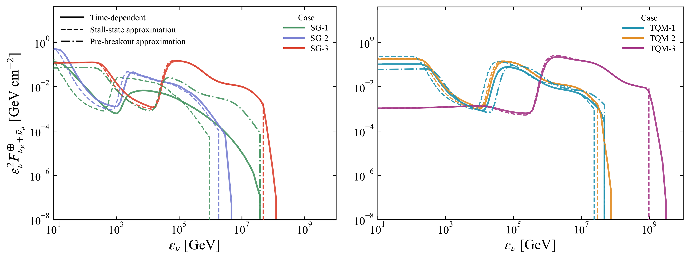展开详细解读：文章讲解、背景、理论、重点章节、图表与相关工作
文章详细讲解
关键结果是怎么做出来的
展开背景、理论、公式、模型、章节和图表导读
背景知识
基础理论 / 方法脉络
公式与推导
模型拟合 / 应用方法
重点章节 / 结果段落怎么读
建议重点查看的图表
关键图表逐图导读
论文原图 / 可嵌入图片
图注：Diagnostic diagram comparing $L_\gamma$ and kinetic power. For the MEGARA LINER sample and the starburst galaxies (M82, NGC~253), the x-axis represents the kinetic power of the extended ionized outflows and of the star-formation-driven superwind, respectively. For the radio galaxies (Centaurus~A, M87), the x-axis represents the time-averaged kinetic power of their jets. Literature $\gamma$-ray luminosities have been homogenized to the 0.05--500~GeV band for consistency. Diagonal lines represent contours of constant putative efficiency ($\eta$). Downward-pointing arrows indicate 95\% confidence level upper limits on $L_\gamma$; the rightward arrow on NGC~4278 indicates that its outflow kinetic power is a lower limit \(\citep{HermosaMunoz2024}.\)
对应解读：对应“建议重点查看的图表”第5项以及“关键图表逐图导读”图5：光学外流功率与γ射线光度比较图；也直接支撑效率η与LAT上限的核心结论。
入选理由：这是候选中唯一且最核心的论文图，横轴为外流或喷流动能功率，纵轴为0.05--500 GeV γ射线光度，包含LINER上限、星暴星系和射电星系对照点，并用对角线标出恒定效率η。它直接展示大多数LINER的LAT上限仍高于外流功率、NGC 1052给出最强效率限制，以及NGC 4278等对象在效率诊断图中的位置，比任何单独的文字表述更能支撑日报关于“哪些上限有物理约束、哪些只是η≫1的弱限制”的解读。
来源与置信度：\(arxiv_source\)；high；\(arxiv_source\) / LINERs.tex:figure[1]强相关工作
3. High-energy neutrino signatures of embedded GRB jets in AGN disks: a dynamic jet-propagation framework
展开详细解读：文章讲解、背景、理论、重点章节、图表与相关工作
文章详细讲解
关键结果是怎么做出来的
展开背景、理论、公式、模型、章节和图表导读
背景知识
基础理论 / 方法脉络
公式与推导
模型拟合 / 应用方法
重点章节 / 结果段落怎么读
建议重点查看的图表
关键图表逐图导读
论文原图 / 可嵌入图片
图注：Earth-side $\nu_\mu+\bar{\nu}_\mu$ fluence from a single GRB jet embedded in an AGN disk. The left and right panels correspond to the SG and TQM disk models, respectively. Solid curves show the time-dependent calculation, and dashed curves show the stalling-state approximation. For the breakout cases SG-1 and TQM-1 only, dash-dotted curves show the pre-breakout approximation evaluated just before breakout and normalized by $E_{\rm iso}\mathcal{R}_{\rm dur}$. Colors identify the six representative cases.
对应解读：对应“建议重点查看的图表”第4项瞬时与积分中微子谱、第5项单状态近似误差图，以及“关键图表逐图导读”图4/图5和模型拟合段落中完整轨迹积分与单状态近似的系统偏差。
入选理由：该图直接比较地球端νμ+反νμ fluence 的时间依赖计算、停滞态近似以及突破前近似，是验证窒息情形约14%偏差和突破情形单状态估计可能高估 fluence 的核心图。它同时展示SG与TQM两类盘模型、六个代表案例和谱形差异，比单纯动力学或冷却图更直接支撑论文主结论。
来源与置信度：\(arxiv_source\)；high；\(arxiv_source\) / main.tex:figure[5]
Fig01
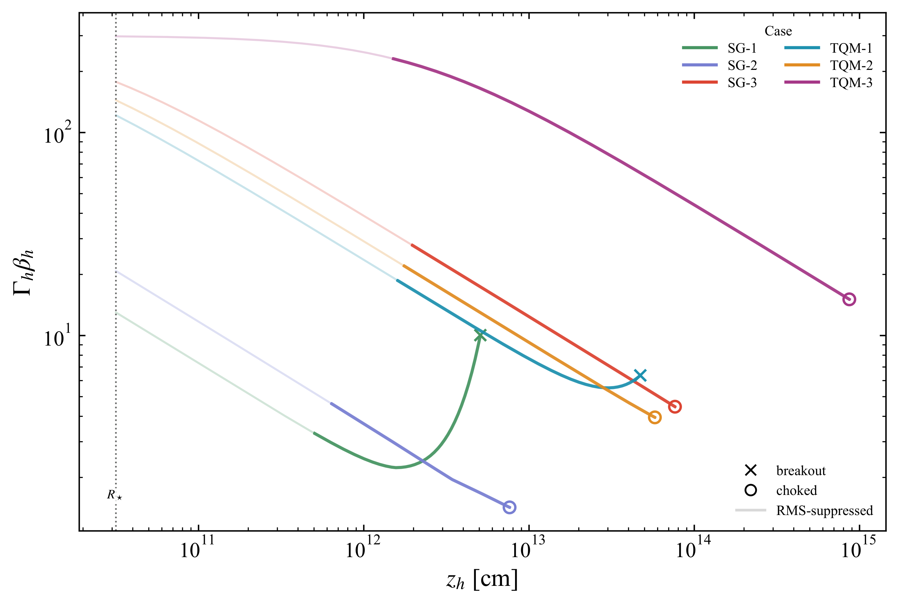
图注：Dynamical evolution of the six representative jet heads as a function of height $z_{\mathrm h}$. Colors encode the six representative cases ($\mathrm{SG}\text{--}1\dots 3$ and $\mathrm{TQM}\text{--}1\dots 3$). Open circles mark choking, whereas crosses mark successful breakout. Faint curve segments fail the state-dependent RMS acceleration condition; fully colored segments enter the observable neutrino fluence. The corresponding disk parameters are listed in table~\(\ref{tab:disk_parameters_jetprop}.\)
对应解读：对应“建议重点查看的图表”第2项喷流头动力学演化图，以及“关键图表逐图导读”图2关于窒息、突破和喷流头传播轨迹的解读。
入选理由：该图给出六个代表喷流头随高度的动力学演化，并用空心圆和叉号标出窒息与成功突破，是理解后续中微子产额差异的物理基础。它还标明哪些轨迹段满足可产生可观测中微子 fluence 的条件，可直接连接传播动力学与辐射输出。
来源与置信度：\(arxiv_source\)；high；\(arxiv_source\) / main.tex:figure[1]
Fig06
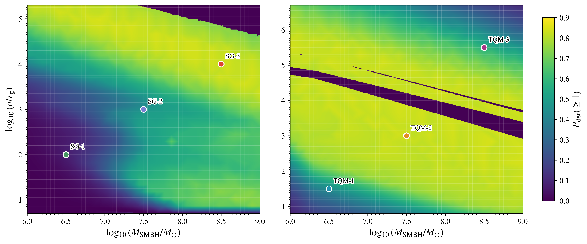
图注：Parameter-space estimate of the probability of detecting at least one neutrino from a single embedded GRB jet at $D_L=100\,{\rm Mpc}$ in the SG (left) and TQM (right) disk models. Colored circles mark the six representative trajectories analyzed in section~\(\ref{sec:single},\) styled in their corresponding case colors.
对应解读：对应“建议重点查看的图表”第6项参数空间可探测性图，以及“关键图表逐图导读”图6关于黑洞质量、盘半径或源位置上的SG/TQM差异。
入选理由：该图展示单个嵌入GRB喷流在100 Mpc处至少探测到一个中微子的概率，并分列SG与TQM盘模型，是参数扫描和可探测性结论的关键证据。它能说明不同盘模型中可探测区域如何移动，也能把六个代表轨迹放回更大的参数空间中理解。
来源与置信度：\(arxiv_source\)；high；\(arxiv_source\) / main.tex:figure[6]
Fig02
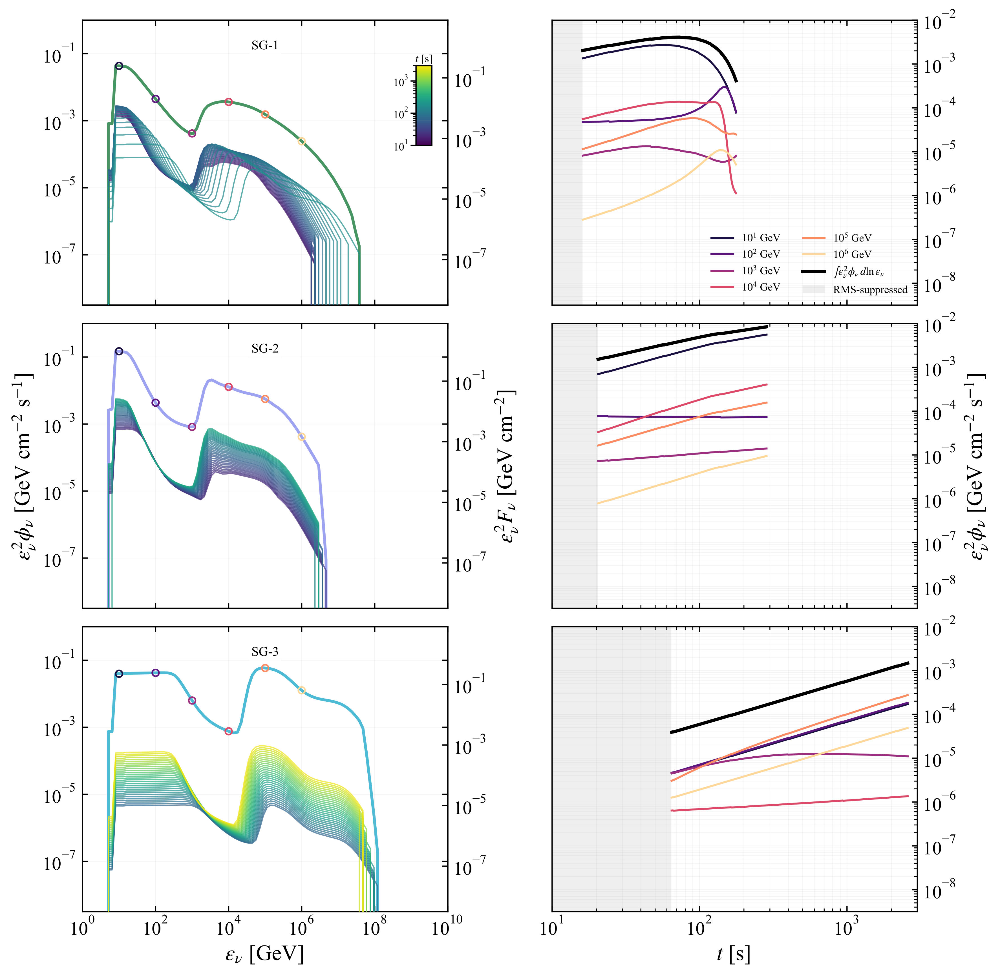
图注：Time evolution of the unoscillated, all-flavor neutrino and antineutrino emission in the SG disk model; panel titles give the case name. The top row shows a successful breakout, whereas the middle and bottom rows show finite-engine choked jets. Left panels show instantaneous \(E_\nu^2\phi_\nu\) spectra, colored by time, together with the time-integrated spectrum. Right panels show light curves at fixed neutrino energies. Radiation-mediated portions of each trajectory are excluded from the observable fluence.
对应解读：对应“建议重点查看的图表”第4项瞬时与积分中微子谱，以及“关键图表逐图导读”图4中关于谱峰、高能截断和时间阶段贡献的说明；该图专门对应SG盘模型。
入选理由：该图同时给出SG模型下瞬时Eν²φν谱、时间积分谱和固定能量光变曲线，可以看出不同传播阶段对总中微子输出和高能尾的贡献。它还区分成功突破与有限引擎窒息喷流，是解释SG案例中时间依赖效应不可忽略的重要图。
来源与置信度：\(arxiv_source\)；high；\(arxiv_source\) / main.tex:figure[2]
Fig03
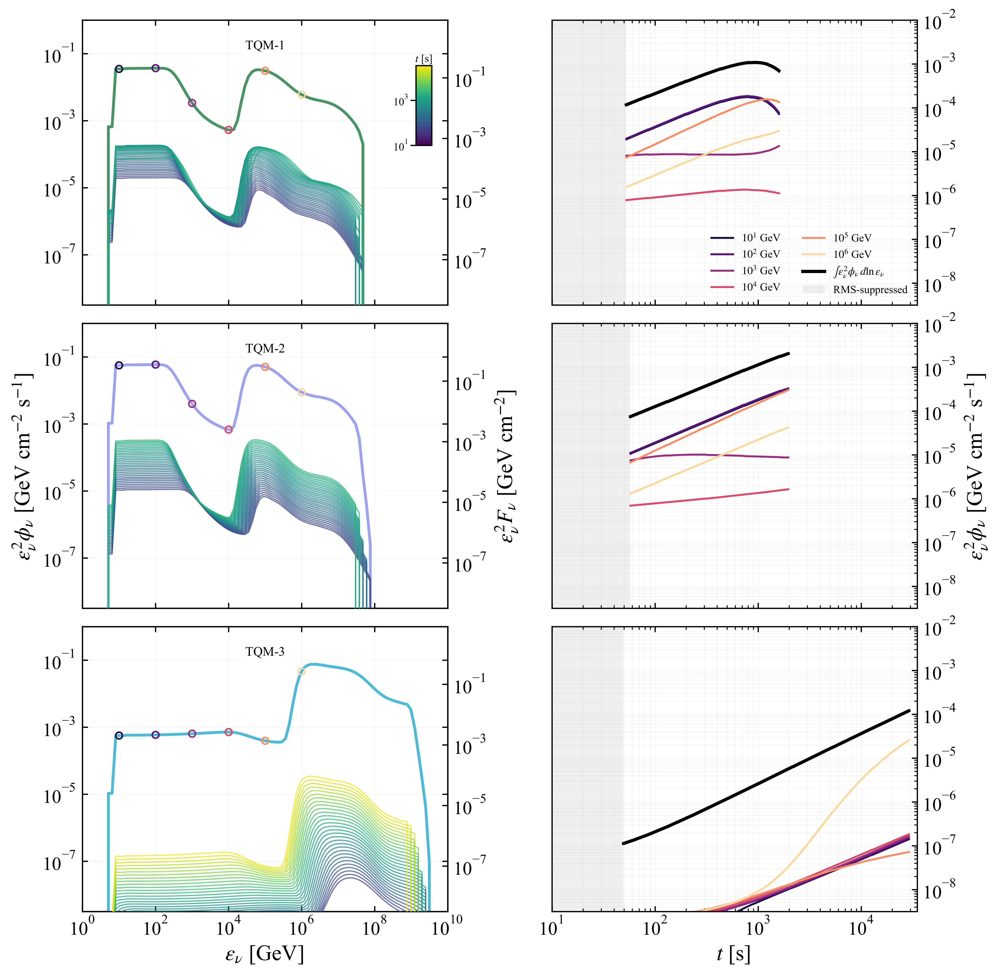
图注：Time evolution of the unoscillated, all-flavor neutrino and antineutrino emission in the TQM disk model. The top row shows a successful breakout (TQM-1), whereas the middle and bottom rows show finite-engine choked jets (TQM-2 and TQM-3); the remaining conventions are the same as in figure~\(\ref{fig:nuslsg}.\)
对应解读：对应“建议重点查看的图表”第4项瞬时与积分中微子谱，以及“关键图表逐图导读”图4；该图补充TQM盘模型中的时间演化中微子谱和光变。
入选理由：该图与Fig02构成SG/TQM对照，展示TQM模型中突破与窒息喷流的瞬时谱、积分谱和固定能量光变。由于日报反复强调SG与TQM环境差异，保留此图有助于比较两种盘模型下高能谱尾和时间主导阶段是否不同。
来源与置信度：\(arxiv_source\)；high；\(arxiv_source\) / main.tex:figure[3]
Fig04
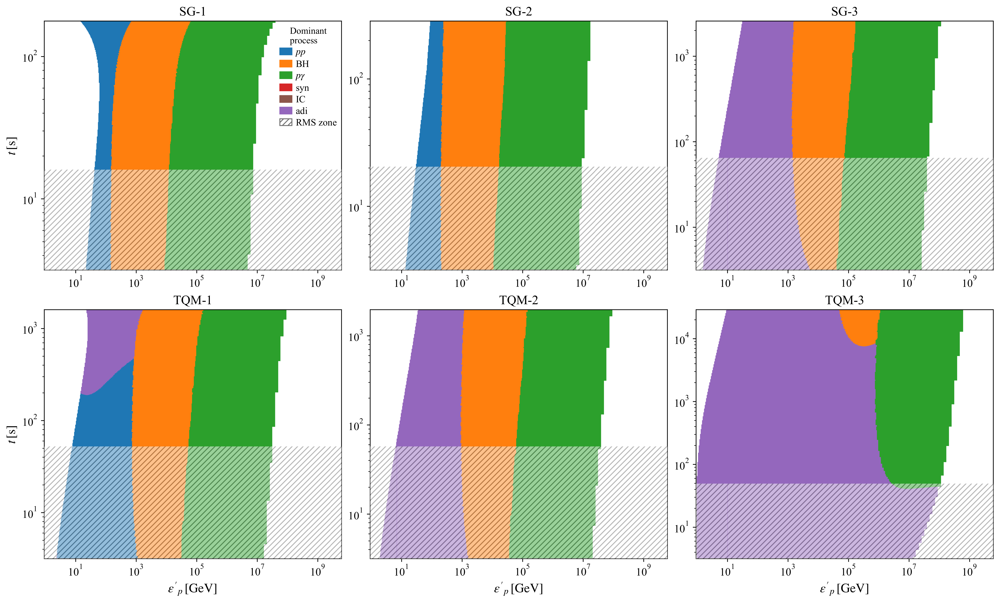
图注：Dominant comoving proton cooling and interaction processes as functions of proton energy and propagation time across all six representative cases; panel titles indicate case names. Upper and lower rows correspond to the SG and TQM disk models, respectively. The color maps compare regions dominated by $pp$, $p\gamma$, BH pair production, synchrotron, IC, and adiabatic losses. The hatched regions labeled 'RMS zone' denote early radiation-mediated shock stages where collisionless particle acceleration is suppressed; these unaccelerated stages are excluded from neutrino production.
对应解读：对应“建议重点查看的图表”第7项冷却时间比较图，以及模型拟合段落中关于pp、pγ、同步、IC、绝热损失和RMS阶段对谱截断的诊断。
入选理由：该图给出六个代表案例中主导质子冷却和相互作用过程随能量与传播时间的变化，能解释为何某些阶段不能有效加速粒子、为何高能谱尾会被冷却过程限制。虽然它不直接给出事件数或近似误差，但对理解谱形和10--100 PeV尾部的物理来源很重要。
来源与置信度：\(arxiv_source\)；high；\(arxiv_source\) / main.tex:figure[4]
强相关工作
这篇工作属于“隐藏瞬变源高能中微子”与“AGN 盘内瞬变源”两条文献线的交叉。相近研究包括超新星包层内窒息 GRB 喷流、低光度 GRB 中微子、潮汐瓦解事件喷流中微子、AGN 核区或盘内致密天体并合产生的多信使信号。应检索关键词包括 “choked GRB jet neutrinos”、“embedded jet AGN disk neutrinos”、“AGN disk transients high-energy neutrinos”、“jet propagation dense medium neutrinos”。
与经典 GRB 中微子工作的关系也很关键。早期模型强调外显 GRB 可产生 PeV 中微子，但 IceCube 对 GRB 的堆叠非探测迫使理论转向更暗、更高光深或更复杂环境的源。本文的相反提醒是：隐藏环境并不自动保证高通量；传播动力学、反向激波耗散和二级粒子冷却可能让单区估计过于乐观。若想追踪已有张力，应检索 “IceCube GRB stacking neutrino limits”、“Waxman Bahcall GRB neutrinos”、“Murase hidden cosmic-ray accelerators”。
同一事件 / 同类源线索：
相似工作：
基础理论 / 方法工作：
相反观点 / 张力线索：
4. SPORE: An Event-Level Sampling Pipeline for Multi-Telescope Neutrino Astronomy
- 来源：arXiv / astro-ph.HE
- 链接：https://arxiv.org/abs/2608.11862v1
- 作者：Jeffrey Lazar, Perrine Wilmet, Gwenhaël de Wasseige
- 评分：novelty 7/10，importance 8/10，relevance 8/10，final 8.70/10
- 推荐理由：面向多中微子望远镜点源和扩展源分析的事件级开源采样管线，使用IceCube公开IRF验证；对高能中微子天文学方法和多信使分析有复用价值。
中文题目：SPORE：面向多望远镜中微子天文学的事件级抽样流水线
做了什么：这篇论文发布并验证了一个开源 Python 包 “SPORE”，用于根据中微子望远镜的仪器响应函数生成事件级模拟样本。它把有效面积、点扩散函数和能量分辨率统一写入与具体事件选择无关的 HDF5 格式，可处理点源、扩展源、全天通量图以及多探测器联合模拟。作者用 IceCube 10 年 track 公开响应和 HESE 7.5 年公开结果做了回灌验证：天区分布能在北天约 10–15% 内复现实测，能量分布的大偏差主要来自公开能量迁移矩阵的真能量分箱过粗，而不是抽样算法本身。
为什么重要：中微子天文学越来越依赖跨实验、跨事件选择和跨能区的联合分析，但各实验公开的响应函数格式、能量定义和角分辨率处理并不统一。SPORE 的重要性在于把 “从源模型到可观测事件列表” 这一步做成可复用、可检查的事件级工具，而不是每个分析组各写一套不可比较的内部代码。
理论 / 观测 / 仪器方法价值：对方法和仪器方向的价值最直接：它提供了一个 selection-agnostic 的 IRF 容器和事件抽样框架，使公开数据发布、灵敏度预估、源模型检验、多探测器联合分析和伪实验构造更容易标准化。对观测者而言，它能快速检查某个源通量模型在给定探测器中会产生怎样的赤纬、重建能量和角误差分布；对理论模型而言，它把理论通量图与真实仪器选择效应连接起来。
为什么应该关注：如果你做高能中微子源、银河弥散辐射、瞬变多信使关联或下一代中微子望远镜预研，这篇文章值得关注，因为它处理的是很多论文中最容易被隐藏的环节：仪器响应如何从表格变成模拟事件。它也提醒读者，公开 IRF 的分箱和能量迁移细节本身就能造成低能段因子级偏差；因此看到事件级模拟和数据不一致时，不能立刻归因于天体模型。
展开详细解读：文章讲解、背景、理论、重点章节、图表与相关工作
文章详细讲解
科学问题：本文关注的不是某个具体中微子源，而是一个更底层的问题：给定一个天体中微子通量模型和一个中微子望远镜的公开或私有仪器响应函数，怎样生成与真实分析可比的事件级样本？在中微子天文学中，事件数低、角分辨率和能量分辨率高度依赖能量与天顶角，且不同数据集的事件选择差别很大。因此，如果没有统一的事件抽样工具，理论通量、探测器响应和最终似然分析之间会出现很多不可追踪的实现差异。
作者怎么做：SPORE 将探测器响应拆成三类表格组件：有效面积、点扩散函数和能量分辨率，并存入一种与具体事件选择无关的 HDF5 结构。给定源的方向、能谱或天空通量图，程序先用有效面积和观测时间把通量折叠为期望事件数，再抽样真实能量、真实方向、重建方向和重建能量。点源用反累积分布函数抽样，可选择泊松事件数或固定事件数；扩展源采用分层反累积分布函数抽样，支持赤经和赤纬都变化的全天通量图；多探测器情形则把不同仪器的响应分别折叠后合并到一个联合事件样本。
关键结果：验证部分用 IceCube 10 年 track 公开数据作为 round-trip test。作者把公开 IRF 读入 SPORE，生成模拟事件，再比较模拟与真实公开事件在赤纬和重建能量上的分布。赤纬分布在北天大体能复现实测，偏差约 10–15%，说明有效面积、方向抽样和天区权重处理基本正确。重建能量分布在样本主体范围内约在三分之一量级内一致，但在低于约 600 GeV 的区域模拟高出数据最高可达约三倍；作者进一步用独立 forward-folding 计算证明同样偏差可由相同 IRF 重现，因此问题更可能来自公开能量 smearing matrix 的真能量分箱过粗，而非 SPORE 的事件抽样实现。
局限和下一步：这类工具的上限由输入 IRF 的信息量决定。若公开响应函数没有给出足够细的真能量、重建能量、角误差或事件质量变量维度，事件级模拟就无法凭空恢复分析内部的选择效应。SPORE 当前的价值主要在于标准化和可复现，而不是替代实验内部完整模拟。下一步最有意义的是让更多中微子望远镜和数据发布采用可机读的标准 IRF；同时在多信使瞬变、银河面扩展源和下一代阵列灵敏度预估中，把 SPORE 生成的伪事件直接接入源搜索似然框架。
关键结果是怎么做出来的
本文最核心的证据链是两个公开 IceCube 数据集的回灌验证。第一个测试选用 IceCube 10 年 track 公开数据与其对应的公开响应函数。作者并不是重新拟合 IceCube 的天体通量，而是把公开 IRF 当作输入，按照同一观测暴露生成合成事件集，然后检查合成样本是否能恢复公开事件的赤纬和重建能量边缘分布。这种设计能直接检验抽样流水线是否正确读取并折叠有效面积、能量迁移和角响应。
样本选择方面，track 数据适合做方向分布验证，因为其角分辨率较好，且公开数据覆盖多年全天点源搜索常用事件。作者报告北天赤纬分布复现到约 10–15% 水平；这个数值不是发现显著性的 “sigma”，而是模拟分布与观测分布在分箱计数上的相对一致程度。读者应把它理解为对 IRF 读取、天区权重和抽样归一化的工程级验证，而不是对某个物理通量模型的精确测量。
能量分布验证更有诊断意义。合成样本的重建能量在主体区间与数据相差约三分之一，但在约 600 GeV 以下偏高，最高达因子三。作者没有简单把这个归咎于背景建模或抽样误差，而是做了独立 forward-folding：用同一套公开 IRF 直接积分预测重建能量分布，结果复现了 SPORE 的低能过量。这说明事件抽样本身与解析折叠一致，主要问题来自输入响应表的分箱或信息损失。
第二个测试使用 IceCube HESE 7.5 年公开结果。HESE 的关键观测量通常是 deposited energy，而不是 track 样本中的 proxy energy。作者生成 1,000 组伪实验，构造 goodness-of-fit 分布，再把真实观测数据放入该分布中比较。结果是抽样得到的 deposited-energy 谱跟随已发表最佳拟合期望，观测数据落在伪实验 goodness-of-fit 分布内部，但偏向拟合较好的一侧；这符合预期，因为该最佳期望本来就是由这些数据拟合得到的。
统计上，这篇文章强调的是 consistency validation 而非新物理显著性。其可信度来自三层交叉检查：事件级抽样与公开数据边缘分布比较、事件级抽样与独立 forward-folding 比较、以及 HESE 伪实验分布与已发表 best-fit expectation 比较。主要系统误差则来自 IRF 的有限维度、粗分箱、公开数据中未释放的事件质量变量、以及不同事件选择对能量和方向响应的耦合。
展开背景、理论、公式、模型、章节和图表导读
背景知识
高能中微子天文学的观测对象通常不是明亮图像，而是一串稀疏事件：每个事件有到达方向、重建能量或能量 proxy、角误差估计、时间和事件拓扑。天体源的物理模型给出的是真实中微子通量，但观测者看到的是经过地球吸收、探测器几何、触发、重建和选择效应折叠后的事件分布。因此，仪器响应函数是理论与数据之间的核心桥梁。
历史上，伽马射线天文学较早形成了比较成熟的 IRF 概念和工具链，例如有效面积、能量弥散和点扩散函数的标准化文件。中微子天文学也使用类似概念，但由于事件率低、背景来自大气 muon 和大气中微子、响应强烈依赖赤纬和能量，各实验的数据发布格式更不统一。公开数据常常足以做再分析和交叉检查，却未必包含内部分析所用的全部多维响应信息。
现在值得重新看这个问题，是因为中微子天文学正进入多探测器和多信使阶段。IceCube、ANTARES、Baikal-GVD、KM3NeT 以及未来 IceCube-Gen2 或 P-ONE 等实验的联合分析，需要把不同探测器的暴露、角响应和能量响应放到同一个统计框架中。若每个团队都用自己的临时代码折叠响应，联合结果很难复现，也难以判断差异来自物理模型、IRF 近似还是软件实现。
一个常见误区是把事件级模拟理解成完整 detector Monte Carlo。SPORE 这类工具不是从光子传播、PMT 响应和触发电子学开始模拟，而是从已经发布或研究内部给出的 IRF 表格开始抽样。它的优势是轻量、透明、易复现；局限是输入 IRF 没有的信息无法恢复。另一个误区是把模拟与数据的能量谱偏差直接解读为物理模型失败；本文的低能偏差例子说明，粗分箱的能量迁移矩阵本身就能制造明显偏差。
基础理论 / 方法脉络
从物理图像看，天体源产生的中微子通量到达地球后，并不会以一一对应的方式变成探测器事件。探测器对不同真实能量、入射方向和味道的中微子有不同的有效面积；一次相互作用产生的二级粒子还会经过有限分辨率重建。因此，理论模型给出的真实变量空间分布必须通过响应函数折叠，才得到可观测事件的概率分布。
有效面积描述的是入射通量到事件率的转换效率。对给定真实能量和方向，若通量越大、暴露时间越长、有效面积越大，期望事件数就越高。点扩散函数描述真实方向与重建方向之间的角偏差分布；track 事件通常角分辨率好，cascade 或 starting event 的角分辨率较差。能量分辨率或 smearing matrix 描述真实能量如何映射到重建能量、deposited energy 或能量 proxy。
SPORE 的模型假设是：给定一组表格化 IRF，事件可以从由通量和响应函数定义的联合概率密度中抽取。对于点源，天空部分近似为固定真实方向，再由点扩散函数抽重建方向；对于扩展源，需要先从天空强度图抽真实方向，再按该方向对应的响应抽能量和重建量。多探测器联合分析则可视为多个独立泊松过程的叠加，每个探测器有自己的响应和暴露。
观测与统计逻辑上，关键不是生成 “看起来像” 的事件，而是让抽样分布与 forward-folded expectation 一致。若同一个 IRF 的解析积分预测与事件抽样伪实验的平均值一致，就说明抽样算法正确；若两者都与真实数据偏离，则应优先检查 IRF 分箱、未公开选择变量、背景组成和通量模型。常见退化包括通量归一化与有效面积归一化退化、谱指数与能量迁移退化、扩展源形态与赤纬依赖暴露退化、以及角分辨率尾部与源扩展度退化。
公式与推导
第一步从源通量开始。设源或天空模型给出微分中微子通量 \(\Phi(E,\Omega)\)，其中 \(E\) 为真实中微子能量，\(\Omega\) 为真实到达方向，单位通常为每能量、每面积、每时间、每立体角。探测器对该通量的期望事件数为
其中 \(T\) 是 livetime，\(A_{\rm eff}(E,\Omega)\) 是有效面积。这个式子是所有事件抽样的归一化基础。
若研究点源，天空通量可写成方向 \(\Omega_s\) 上的 delta 分布：
其中 \(\phi_0\) 是参考能量 \(E_0\) 处的归一化，\(\gamma\) 是谱指数。代入后，期望事件数只需沿真实能量积分，并在源方向处读取有效面积。
事件数本身通常服从泊松统计：
其中 \(N\) 是抽到的事件数。SPORE 也支持固定 \(N\) 模式；前者适合生成真实伪实验，后者适合检查条件分布和软件一致性。
抽样真实能量时，需要把通量和有效面积构成的非归一化密度归一化：
反累积分布抽样就是先计算 \(F(x)=\int_{x_{\min}}^x p(x')dx'\)，再令随机数 \(u\in[0,1]\) 满足 \(x=F^{-1}(u)\)。对多维扩展源，SPORE 用分层方式依次抽 \(\Omega\) 和 \(E\)。
真实方向到重建方向的映射由点扩散函数给出：
其中 \(\hat{\Omega}\) 是重建方向，\(\Delta\psi\) 是角偏差。若 PSF 被表格化为角距离分布，抽样时还需在方位角上均匀旋转。
真实能量到重建能量或 deposited energy 的映射由能量响应给出：
其中 \(\hat{E}\) 可表示 reconstructed energy、energy proxy 或 deposited energy。本文中低能偏差正与 \(R_E\) 的真能量分箱有关。
把方向和能量响应合并后，可观测事件密度为
这个 \(\lambda\) 是 forward-folding 预测，也是事件抽样长期平均应收敛到的分布。
对分箱检验，若第 \(i\) 个观测 bin 的预测为 \(\mu_i\)、观测为 \(n_i\)，常用泊松似然为
伪实验的 goodness-of-fit 可由似然比、\(\chi^2\) 类统计量或 deviance 构造。
例如泊松 deviance 可写作
并约定 \(n_i=0\) 时最后一项为零。HESE 验证中生成大量伪实验，本质上是在比较真实数据的 \(D\) 是否落在由模型自身产生的 \(D\) 分布内。
多探测器联合时，若各探测器 \(k\) 的事件过程独立，总期望与似然可写为
这说明联合分析不是简单相加事件列表，而是要保留每个探测器自己的 \(A_{\rm eff}\)、\(R_E\)、\(R_{\rm psf}\) 和 livetime。
模型拟合 / 应用方法
本文本身主要是抽样与验证论文，但它面向的实际使用场景通常离不开模型拟合。给定源通量参数，例如归一化 \(\phi_0\)、谱指数 \(\gamma\)、截止能量或空间模板权重，SPORE 可生成该模型下的伪事件；随后可以用分箱或非分箱似然比较模拟、期望和观测。对点源搜索而言，拟合量常包括信号事件数、谱指数和源位置附近的空间权重；对扩展源，则还包括模板归一化、源扩展尺度或不同空间模板的混合比例。
似然构造需要区分两层：SPORE 负责从通量和 IRF 产生事件或 forward-folded expectation，真正的物理拟合则需要背景模型和 test statistic。若用分箱能量谱或赤纬分布，残差可看每个 bin 的 \((n_i-\mu_i)/\sigma_i\) 或泊松 deviance 贡献；若用非分箱点源似然，则要看每个事件的空间项、能量项和背景项。本文验证中的赤纬残差和重建能量残差，就是判断响应折叠是否可信的基本诊断。
参数退化在这类工作里很实际。通量归一化与有效面积系统误差近似线性退化；谱指数与能量分辨率、能量尺度和能量迁移矩阵分箱相互耦合；源扩展度与 PSF 尾部容易混淆；赤纬依赖的暴露会把真实天空模板的形态扭曲成探测器可见性模式。低能段尤其敏感，因为大气背景强、能量 proxy 与真实能量关系宽，且触发与选择阈值附近的响应变化快。
先验或约束的选择也很重要。若做多探测器联合，不能假设所有探测器共享同一个能量尺度或角分辨率系统误差；更合理的是给每个实验设置独立 nuisance 参数，或至少用响应变体评估系统包络。若公开 IRF 只有中心值而无系统变体，SPORE 生成的伪实验只能反映统计涨落和表格响应本身，不能完整覆盖探测器系统误差。
模型可能失败的方式包括：输入通量图分辨率与 IRF 角分箱不匹配，导致扩展源边缘被错误平滑；能量迁移矩阵过粗，导致某些重建能量段出现人工过量或亏损；公开数据缺少事件质量变量，导致角误差与能量的相关性被破坏；以及在全天模板中忽略地球吸收或季节性 livetime 变化。实际应用中，最好同时检查边缘分布、一维残差、二维 \(\hat{E}\)-赤纬分布和伪实验覆盖率，而不是只看总事件数。
重点章节 / 结果段落怎么读
-
数据结构与 IRF 表示：读者应重点看作者如何把有效面积、PSF 和能量分辨率写成 HDF5。关键是 selection-agnostic 并不意味着不依赖选择，而是把任意选择后的响应以统一格式保存；不同事件样本仍需各自的 IRF。
-
点源抽样算法：这一部分解释反累积分布抽样、泊松事件数模式和固定事件数模式。读者应检查真实能量、真实方向、重建方向和重建能量的抽样顺序，以及各概率密度是否正确归一化。
-
扩展源与全天通量图：这里是本文区别于简单点源模拟器的重点。需要关注分层抽样如何处理赤经、赤纬和能量的联合分布，尤其是全天模板与赤纬依赖有效面积相乘后，观测分布会如何改变。
-
多探测器联合框架：这一节应从统计独立泊松过程的角度阅读。重点不是把不同实验事件机械合并，而是每个探测器用自己的 IRF 产生期望事件，再在联合似然或联合伪实验中组合。
-
IceCube 10 年 track 验证：这是最重要的实证测试。读者应看赤纬分布复现到 10–15% 的程度，以及重建能量低能过量如何通过独立 forward-folding 追踪到公开 smearing matrix 的粗真能量分箱。
-
HESE 7.5 年验证：这一部分展示伪实验 goodness-of-fit 的用法。重点看 sampled deposited-energy spectrum 是否跟随已发表 best-fit expectation，以及真实数据在 1,000 组伪实验分布中的位置。
建议重点查看的图表
-
IRF 数据结构或流程图：看 HDF5 中有效面积、PSF、能量分辨率的层级关系，确认各轴变量是 \(E\)、\(\Omega\)、\(\hat{E}\)、\(\Delta\psi\) 还是事件类型。
-
点源抽样验证图：看反累积分布抽样生成的真实能量或重建角偏差是否跟输入解析或表格分布一致，尤其是分箱边界附近是否有伪结构。
-
扩展源全天图抽样结果：看输入通量图与经过有效面积加权后的事件图是否区别明显；不要把观测事件图误读为真实通量图。
-
IceCube 10 年 track 赤纬分布比较：重点看北天各赤纬 bin 的相对残差是否在约 10–15% 内，是否存在随赤纬单调变化的系统趋势。
-
IceCube 10 年 track 重建能量分布比较：重点看约 600 GeV 以下的模拟过量、主体能区三分之一量级差异，以及 forward-folding 曲线是否与事件抽样一致。
-
HESE deposited-energy 谱：看抽样期望、已发表 best-fit expectation 和真实事件分布的相对位置；注意高能尾部的低计数泊松涨落。
-
伪实验 goodness-of-fit 分布：看真实数据的统计量落在分布哪里，以及是否偏向过好拟合；这关系到验证是否存在过拟合或自洽性偏差。
关键图表逐图导读
图 1：若论文给出 SPORE 流水线示意图，横向通常应从输入通量模型和 IRF 开始，经期望事件数计算、真实变量抽样、响应抽样，最后得到事件列表。读图时要分清真实变量 \(E,\Omega\) 与重建变量 \(\hat{E},\hat{\Omega}\)，不要把能量响应和有效面积混为一谈。
图 2：IRF 或 HDF5 结构图应展示有效面积、PSF 和能量分辨率如何被表格化。关键读法是检查每个响应组件的轴是否足够覆盖分析变量；若能量响应只在很粗的真能量 bin 上给出，后续低能偏差就可能不是抽样问题。
图 3：点源或扩展源抽样测试图通常会把输入概率分布、抽样直方图和残差放在一起。横轴可能是真实能量、赤纬或角偏差，纵轴是计数或概率密度。读图陷阱是低计数 bin 的相对残差会很大，应结合泊松误差或伪实验带判断。
图 4：IceCube 10 年 track 赤纬分布比较是验证有效面积和天区权重的关键图。横轴应为赤纬或 \(\sin\delta\)，纵轴为事件数或归一化计数。若模拟点和数据点在北天多数 bin 内差约 10–15%，说明方向相关响应处理大体正确；若残差随赤纬连续漂移，则可能是 livetime、有效面积插值或背景组成问题。
图 5：IceCube 10 年 track 重建能量分布比较需要特别看低能端。横轴为重建能量或能量 proxy，纵轴为事件数；模型线可能包括 SPORE 抽样平均和独立 forward-folding。若两条模型线一起高于数据，说明问题在输入 IRF 或模型期望，而不是随机抽样器。
图 6：HESE deposited-energy 谱应把 sampled expectation、公开 best-fit expectation 和观测数据放在同一坐标中。横轴是 deposited energy，纵轴为事件数或期望计数。读图时要注意 HESE 高能端每个 bin 事件数很少，视觉上的大偏差未必统计显著。
图 7：goodness-of-fit 伪实验分布通常横轴为某个检验统计量，纵轴为伪实验频数，真实数据用竖线标出。若竖线在分布内部但偏向较好拟合一侧，符合本文解释：比较对象是由同一数据拟合得到的 published best-fit expectation，因此真实数据不应被当作独立预测检验。
论文原图 / 可嵌入图片
Fig05
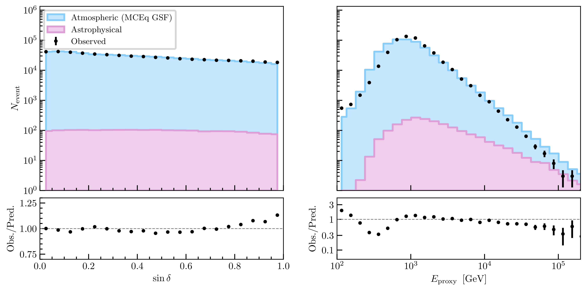
图注：\(\textbf{\textit{Sampling expectation for northern-sky tracks versus observed data.}}\) The upper panels show the predictions from 40 \(\spore{}\) pseudo-experiments using the IceCube 10-year point-source IRF~\(\citep{IceCube:2021xar},\) decomposed into atmospheric (blue, MCEq GSF) and astrophysical (pink) components, compared to the observed IC86 data (black points). The left column shows the distribution in $\sin\delta$ and the right column the distribution in reconstructed muon energy proxy, both for northern-sky ($\delta > 0$) events. The atmospheric normalization is fit to the $\sin\delta$ distribution only, so the energy proxy distribution is a prediction. The lower panels show the ratio of observed to predicted counts; the dashed line marks unity. Note that the residual axis is linear on the left and logarithmic on the right.
对应解读：对应“建议重点查看的图表”第4、5项，以及“关键图表逐图导读”中的 IceCube 10 年 track 赤纬分布比较和重建能量分布比较。
入选理由：这是日报解读中最核心的验证图，同时给出北天 track 样本的 sinδ 分布、重建 muon energy proxy 分布以及观测/预测残差。它直接支撑赤纬方向响应约10–15%一致性、低能端模拟过量、能量分布作为独立预测等关键结论，比其他图更能检验 SPORE 对公开 IceCube IRF 的 round-trip 一致性。
来源与置信度：\(arxiv_source\)；high；\(arxiv_source\) / main.tex:figure[5]
Fig04
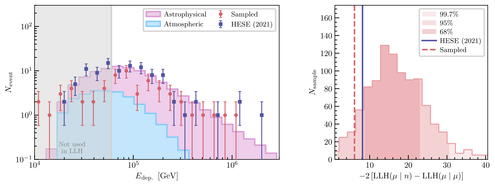
图注：\(\textbf{\textit{Sampled events compared to experimental observation and MC expectation from HESE 7.5-yr.}}\) The left panel shows stacked filled regions for the atmospheric (blue) and astrophysical (pink) MC expectations at the best-fit parameters from Ref.~\(\citep{IceCube:2020wum}\) with nominal detector systematics. Red points show a single draw of the \(\spore{}\) sampling, while dark blue points show the observed experimental data. The gray band marks the region below \(\SI{60}{\TeV}\) where atmospheric muons still contribute, which \(\spore{}\) does not simulate and which the HESE analysis excludes. The right panel shows the distribution of test statistics between 1{,}000 \(\spore{}\) samples and the best-fit Monte Carlo. The shaded regions denote the minimum-length 68\%, 95\%, and 99.7\% containment regions and the test statistics from the \(\spore{}\) sample in the left panel and the experimental data are shown as vertical lines.
对应解读：对应“建议重点查看的图表”第6、7项，以及“关键图表逐图导读”中的 HESE deposited-energy 谱和 goodness-of-fit 伪实验分布。
入选理由：该图左 panel 比较 HESE 7.5 年 deposited-energy 观测数据、已发表 best-fit MC expectation 与 SPORE 单次抽样，右 panel 给出1000个伪实验的检验统计量分布和真实数据位置。它同时覆盖能谱验证和 GOF 覆盖率，是判断 sampled expectation 是否与公开 best-fit expectation 自洽的关键证据。
来源与置信度：\(arxiv_source\)；high；\(arxiv_source\) / main.tex:figure[4]
Fig01
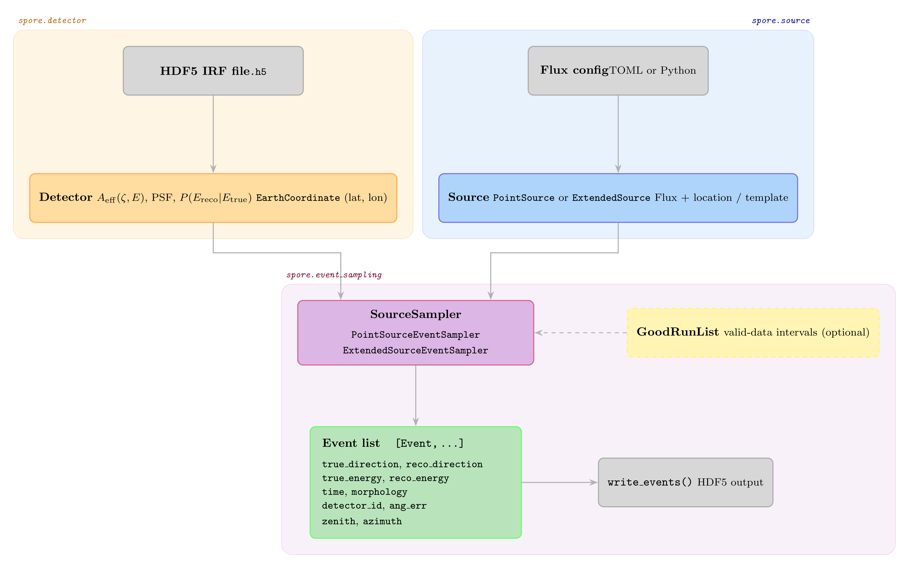
图注：Package architecture. Arrows indicate data flow. A \(\texttt{Source}\) object specifies the astrophysical signal (flux and spatial distribution); a \(\texttt{Detector}\) object encapsulates the three IRF components loaded from an HDF5 file; a \(\texttt{Sampler}\) combines the two to produce a list of \(\texttt{Event}\) objects carrying true and reconstructed direction, energy, time, morphology label, detector identifier, and local zenith and azimuth angles. All components can be constructed programmatically or via TOML configuration files.
对应解读：对应“建议重点查看的图表”第1项，以及“关键图表逐图导读”图1关于 SPORE 流水线和真实/重建变量区分的说明。
入选理由：该图展示 Source、Detector、Sampler 到 Event 对象的数据流，并明确 Detector 封装有效面积、PSF 和能量分辨率三类 IRF，Event 包含真实与重建方向、能量等字段。它最适合支撑日报中关于 SPORE 管线、IRF 折叠和事件级输出结构的概念性解读。
来源与置信度：\(arxiv_source\)；high；\(arxiv_source\) / main.tex:figure[1]
Fig06
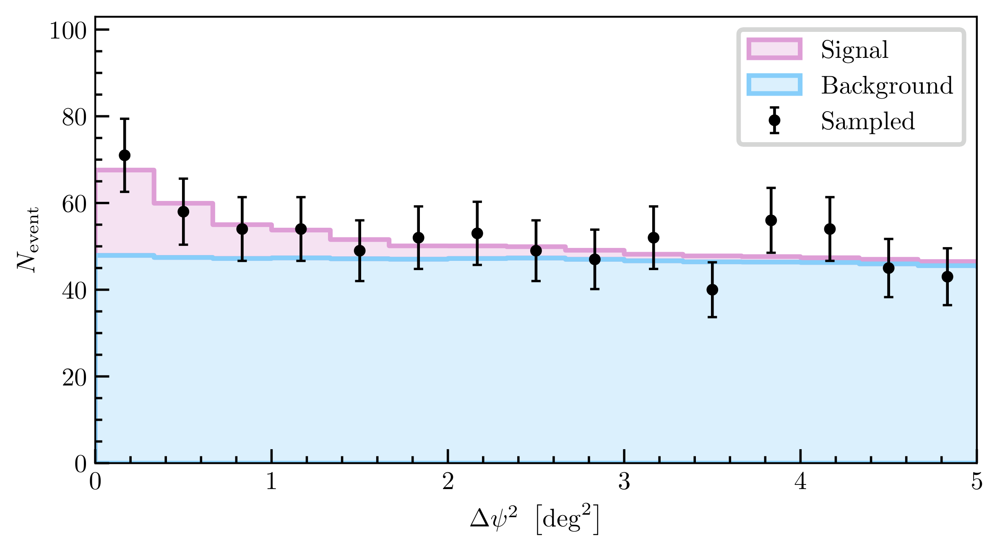
图注：\(\textbf{\textit{Angular distribution of events near NGC-1068.}}\) The signal template (pink), constructed by averaging 1{,}000 point-source pseudo-experiments, and the background template (blue), constructed by averaging 1{,}000 RA-scrambled realizations of the synthetic event set, are shown separately. The point source is placed at the location of NGC-1068 with $\gamma = 3.2$ and a per-species normalization $\Phi^{1\nu}_{1\,\mathrm{TeV}} = \SI{2.5e-14}{\GeV^{-1}\cm^{-2}\s^{-1}}$, so that the summed $\nu_\mu + \bar\nu_\mu$ flux sampled for track events matches the best fit of Ref.~\(\citep{IceCube:2022der}.\) The $\psi^2$ distribution of the synthetic event sample (atmospheric + astrophysical background + NGC-1068 signal) is shown as black scatter points; the excess concentrated near $\psi^2 = 0$ reflects the signal contribution. The realization shown is one of 60 draws, chosen to be free of large bin-to-bin fluctuations; the templates and all quantitative statements use the full unselected ensembles.
对应解读：对应“建议重点查看的图表”第2项，以及模型拟合段落中点源搜索、空间项和背景模板的讨论。
入选理由：该图展示 NGC-1068 附近的点源信号模板、RA-scrambled 背景模板和合成事件的角距离平方分布，能直观看出点源信号在 ψ²≈0 处的集中。它比一般流程图更直接体现事件级抽样如何进入点源似然或空间模板验证。
来源与置信度：\(arxiv_source\)；high；\(arxiv_source\) / main.tex:figure[6]
Fig02
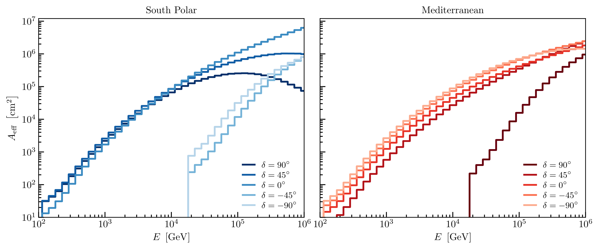
图注：\(\textbf{\textit{Track-selection effective area for South Polar and Mediterranean detectors.}}\) Effective areas have been averaged over a day for both detectors. The trivial transform between local and equatorial coordinates for the South Polar detector results in more extreme variation between declinations. In contrast, the non-trivial transform results in more consistent effective areas for the Mediterranean detector (red).
对应解读：对应“建议重点查看的图表”第1、3项中关于有效面积、赤纬依赖曝光和多探测器响应差异的讨论。
入选理由：该图比较南极与地中海探测器的 track-selection effective area，并展示坐标变换和日平均后不同赤纬上的响应差异。它有助于解释为什么扩展源或全天通量图经过有效面积加权后会显著不同于原始通量图，也支撑多探测器联合时不能忽略各实验曝光差异的论点。
来源与置信度：\(arxiv_source\)；high；\(arxiv_source\) / main.tex:figure[2]
Fig03
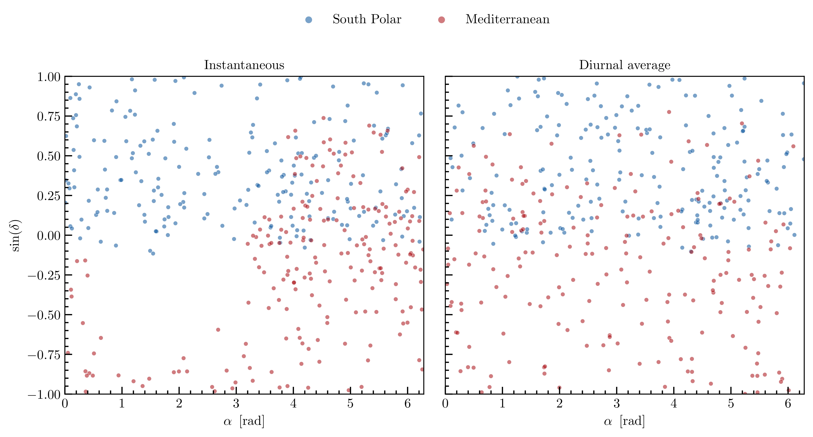
图注：\(\textbf{\textit{Reconstructed event directions for Mediterranean and South Polar neutrino telescopes.}}\) The left panel shows the instantaneous exposure, while the right panel shows the diurnally averaged exposure. The distribution from the South Polar detector (blue) does not change from one panel to the next due to its position on Earth's rotation axis, whereas the Mediterranean detector (red) is smeared by the diurnal averaging.
对应解读：对应“建议重点查看的图表”第3项，以及扩展源全天图抽样结果中关于瞬时曝光与日平均曝光区别的说明。
入选理由：该图展示地中海和南极中微子望远镜的重建事件方向分布，并比较瞬时曝光与日平均曝光。它能辅助说明探测器位置和地球自转如何改变事件图样，避免把经过探测器曝光调制后的事件分布误读为真实天体通量分布。
来源与置信度：\(arxiv_source\)；high；\(arxiv_source\) / main.tex:figure[3]
强相关工作
这篇工作与 IceCube 公开数据再分析、伽马射线天文学中的 IRF 标准化工具、以及多探测器中微子联合分析直接相关。同一数据集背景包括 IceCube 10 年 track point-source public release 和 HESE 7.5 年结果；这些不是同一瞬变事件，而是同类公开中微子事件样本和目录级数据产品。建议检索关键词：\(\text{IceCube 10-year point source data release}\)、\(\text{IceCube HESE 7.5-year}\)、\(\text{neutrino telescope instrument response functions}\)、\(\text{effective area point spread function energy smearing}\)。
相近工作还包括 ANTARES、KM3NeT 和 Baikal-GVD 对点源或弥散中微子分析中使用的响应折叠方法，以及高能伽马射线领域 Gammapy、ctools 等工具对 IRF 的标准化处理。潜在张力不在某个物理结论，而在公开 IRF 的粗粒度与精细事件级再分析需求之间：如果公开响应缺少内部事件质量变量或系统误差变体，任何外部工具都只能做到有限复现。建议进一步检索 \(\text{multi-messenger neutrino likelihood public data}\)、\(\text{IceCube public IRF smearing matrix}\)、\(\text{KM3NeT open data IRF}\)。
同一事件 / 同类源线索：
相似工作：
基础理论 / 方法工作：
相反观点 / 张力线索：
（未提供）
5. XRISM Spectroscopy of Variable Accretion-driven Disk Winds in NGC 4151: When, Where, and How Fast Outflows are Launched
- 来源：arXiv / astro-ph.HE
- 链接：https://arxiv.org/abs/2608.11315v1
- 作者：Xin Xiang, Jon Miller, Missagh Mehdipour, Ehud Behar, W. Niel Brandt, Laura Brenneman, Luigi Gallo, Elias Kammoun
- 评分：novelty 8/10，importance 8/10，relevance 7/10，final 8.65/10
- 推荐理由：XRISM Resolve对NGC 4151盘风进行0.9 Ms高分辨X射线时变光谱研究，给出UFO/VFO响应时标和磁驱动证据；AGN高能吸积/反馈结果较重要。
中文题目：XRISM 对 NGC 4151 中可变吸积驱动盘风的光谱学研究：外流何时、何处、以多快速度被发射
做了什么：这篇论文利用 XRISM/Resolve 对近邻 Seyfert 1 星系 NGC 4151 的 14 次观测，总曝光约 \(0.9\,\mathrm{Ms}\)，覆盖 \(395\) 天，研究 X 射线吸收盘风如何随通量、硬度、耀发和低谷事件变化。作者把风分成持续存在的慢速温吸收体、速度约 \(10^3\) 到 \(10^4\,\mathrm{km\,s^{-1}}\) 的很快外流，以及 Fe K 波段中速度可达 \(0.033c\) 到 \(0.33c\) 的超快外流。核心结论是：慢速成分几乎总在，可能是位于 \(10^4\) 到 \(10^5GM/c^2\) 的失败风；高速成分在耀发峰值后约 \(10\,\mathrm{ks}\) 和低通量窗口最强，说明它们可能在很靠近发射区的位置被看到。吸收测度分布和较大的动量率指向磁驱动为主，同时局部团块性可能与辐射压有关。
为什么重要：AGN 盘风是连接黑洞吸积、辐射输出和星系尺度反馈的关键环节，但外流究竟在哪里发射、由磁场还是辐射驱动、是否随吸积状态实时响应，一直缺少高分辨率且高时间采样的证据。NGC 4151 足够近、足够亮、吸收复杂，是检验这些问题的标杆源。XRISM/Resolve 的能量分辨率让 Fe K 吸收线和低能温吸收体可以在同一组数据中被统一追踪，这比只用 CCD 硬度比或单次深曝光更接近真正的动力学诊断。
理论 / 观测 / 仪器方法价值：这项工作的价值在于把高分辨率 X 射线光谱从“静态成分分解”推进到“时间响应测量”。它给出了温吸收体、很快外流和超快外流在同一源中的相对位置、速度和电离结构，并把 \(10\,\mathrm{ks}\) 级别的耀发—外流响应作为约束发射半径和驱动机制的观测量。对理论而言，它为磁离心风、磁压风和辐射团块化模型提供了可检验的时域边界条件；对观测而言，它展示了微量热计在 AGN 风研究中如何把速度、电离度、柱密度和变异性联合起来。
为什么应该关注：如果你关心 AGN 反馈，这篇文章值得看，因为它讨论的不是遥远的星系尺度外流，而是最接近黑洞和吸积盘的能量与动量注入点。如果你关心高分辨率 X 射线光谱，它展示了 XRISM 在复杂吸收源中能做到什么、也暴露了多成分拟合的困难。如果你关心 changing-look AGN 或吸积态转换，NGC 4151 的风随耀发和低通量状态改变，说明遮挡、内盘结构和外流发射可能是同一套非稳态吸积物理的不同投影。
展开详细解读：文章讲解、背景、理论、重点章节、图表与相关工作
文章详细讲解
科学问题：AGN 中的 X 射线吸收风通常被分成低速温吸收体和 Fe K 波段高速外流，但这两个类别到底是同一全球风在不同半径和电离度上的切片，还是完全不同的气体结构，并不清楚。更关键的是，过去很多研究依赖单次深曝光，能测出速度和电离度，却难以判断风是否实时响应吸积流变化。本文把问题具体化为：在 NGC 4151 这样的近邻、亮、吸收复杂 Seyfert 1 中，外流的速度、柱密度、电离状态和可见性是否随耀发、低谷、硬度和通量有系统变化；若有，这种变化能否约束风的发射半径和驱动机制。
作者怎么做：论文使用 XRISM/Resolve 的 \(14\) 次观测，总曝光约 \(0.9\,\mathrm{Ms}\)，时间跨度 \(395\) 天。Resolve 的优势是能在 Fe K 波段把窄吸收线的能量位移和线宽从连续谱曲率中分离出来，同时在软 X 射线能段测量多电离态离子的吸收结构。作者不是只叠加全部数据，而是按时间、通量、硬度、耀发峰值之后的延迟和低通量区间做选择，比较各子样本中吸收线和光电离吸收模型参数的变化。这样做的逻辑是：如果外流由局部照射或盘状态触发，那么它不应只随长期平均光度变化，而应在短时窗内显现。
关键结果：慢速温吸收体几乎在所有观测和状态选择中都存在，典型速度为 \(100\) 到 \(1000\,\mathrm{km\,s^{-1}}\)，作者将其解释为位于 \(10^4\) 到 \(10^5GM/c^2\) 量级的失败风，空间上可能在尘埃环内壁以内。相比之下，很快外流和超快外流的状态依赖更强：它们在耀发峰值后约 \(10\,\mathrm{ks}\) 变得明显，也在低通量阶段更易被看到。这个 \(10\,\mathrm{ks}\) 响应时间在 AGN 风研究中很短，意味着被观测到的高速吸收气体可能靠近发射区，而不是远处大尺度云团的慢响应。论文还通过吸收测度分布和外流动量率指出，高速 Fe K 风更符合磁驱动情形；不过局部团块性、遮挡和低通量时增强的可见性又提示辐射压或辐射不稳定可能塑造了可观测的局部结构。
局限和下一步：这类结论的难点在于连续谱、反射、遮挡和多电离吸收之间存在强退化。低通量阶段看到更强吸收，可能意味着风真的增强，也可能是连续谱变暗后吸收等效宽度更容易显现，或者遮挡几何改变了视线。\(10\,\mathrm{ks}\) 延迟很有启发性，但它需要与电离响应时间、光穿越时间、动力学时间和采样窗口函数区分开。下一步应把 XRISM 光谱与同时段 UV、光学、硬 X 射线和可能的偏振观测结合，检查同一风结构是否在不同电离相中同步变化；理论上则需要把辐射转移、磁流体发射和非稳态照射放在同一模型中，而不是只用若干离散吸收层拟合。
关键结果是怎么做出来的
样本和数据选择是本文证据链的第一环。作者使用 NGC 4151 的 \(14\) 次 XRISM 观测，总曝光约 \(0.9\,\mathrm{Ms}\)，覆盖 \(395\) 天，因而既有足够的线探测灵敏度，也能把数据切成不同时间和状态子样本。关键不是简单地得到一张最高信噪比平均谱，而是比较全样本、硬度选择、强度选择、耀发峰前后、耀发后约 \(10\,\mathrm{ks}\) 和低通量窗口中的吸收特征。读者应注意每个子样本的有效曝光和计数是否足以支持新增吸收成分，否则状态依赖可能被信噪比差异放大。
事件数在这里不是瞬变事件计数，而是观测段、时间窗和光谱成分的组合。论文把吸收系统分为慢速温吸收体、很快外流和超快外流。慢速温吸收体在大多数或全部状态中出现，说明它不是某一次耀发造成的临时结构；高速 Fe K 吸收则更集中地出现在耀发后和低通量阶段。支撑这一点的图表通常应包括不同状态的谱比、Fe K 局部残差图、最佳拟合吸收线或光电离模型参数表，以及参数随时间或通量的变化图。
显著性和置信度的核心应来自模型比较和残差改善，而不只是“目视有线”。对每个候选吸收成分，合理做法是比较无该成分和加入该成分后的拟合统计量变化，例如 \(\Delta C\) 或 \(\Delta\chi^2\)，并考虑线能量、线宽、速度和电离度搜索带来的试探因子。若论文给出置信区间，读者要看这些区间是否来自联合参数轮廓、MCMC 后验，还是单参数误差；对 Fe K UFO，速度和电离度常常由少数线主导，误差椭圆比单独误差更有意义。
最重要的模型比较是：同一吸收特征能否由连续谱曲率、反射变化或局部遮挡替代解释。NGC 4151 是吸收和反射都很复杂的源，低通量时 Fe K 残差可能受到反射相对增强影响。本文的结论若稳健，应当在不同连续谱设定、不同硬度/通量切分、不同背景和响应处理下仍保留高速吸收增强的趋势。读者应重点检查拟合表中柱密度 \(N_{\mathrm H}\)、电离参数 \(\xi\)、外流速度 \(v_{\mathrm{out}}\) 和覆盖因子是否在物理上协同变化，而不是由单一参数异常拉动。
系统误差方面，Resolve 的能量标定、谱线扩展、有效面积结构、背景估计和交叉定标都会影响窄线速度测量。对于 \(v_{\mathrm{out}}\sim0.033c\) 到 \(0.33c\) 的 UFO，绝对能标误差通常不足以伪造如此大的蓝移，但会影响不同速度子成分的精细区分。对于 \(100\) 到 \(1000\,\mathrm{km\,s^{-1}}\) 的慢速温吸收体，能标和原子数据误差更值得关注。稳健性检验应包括不同能段拟合、去除可疑时间段、改变离子丰度或湍流速度、以及检查不同离子给出的速度是否一致。
论文的关键科学判断来自时间响应。耀发后约 \(10\,\mathrm{ks}\) 出现高速风增强，如果解释为电离或发射响应，就把吸收气体放在很小半径或高密度区域；如果解释为几何遮挡，则仍说明视线上的内盘结构在小时尺度重排。无论哪种解释，都比传统的多年尺度温吸收体变化更接近吸积盘动力学。读者应把这一结果看作强约束而非最终定位：它排除了许多过慢、过远、过平滑的风模型，但还需要多波段和更长监测来分辨触发机制。
展开背景、理论、公式、模型、章节和图表导读
背景知识
NGC 4151 是最经典的近邻 Seyfert 星系之一，红移低、X 射线亮、吸收复杂，因此长期被用作 AGN 中心区结构的实验场。它既有宽线区和窄线区的典型特征，又显示出强烈的 X 射线吸收变化和可能的 changing-look 行为。对这样一个源，视线穿过的气体不是单一屏幕，而可能包括盘风、失败风、宽线区云、尘埃环内壁和反射区的混合贡献。
AGN 温吸收体研究已有几十年历史。软 X 射线中常见的 O、Ne、Mg、Si、S、Fe L 等离子吸收线表明，许多 Seyfert 1 的视线中存在电离气体，速度通常为几百到上千 \(\mathrm{km\,s^{-1}}\)。这些气体的质量外流率可能不小，但由于速度较低，动能反馈效率未必足以影响星系尺度演化。Fe K 波段发现的超快外流则不同，它们的速度可达 \(0.1c\) 量级，若柱密度和覆盖因子足够大，就可能携带可观动能。
历史难题在于，温吸收体和超快外流常常被分开研究。软 X 射线温吸收体需要高分辨率软 X 射线光谱，Fe K UFO 需要高信噪比硬 X 射线谱；过去仪器在能量分辨率、有效面积和时间覆盖之间很难兼得。另一个难题是 AGN 的连续谱本身在变，吸收气体的电离状态也在变；单次观测看到的吸收结构可能只是某个状态的投影，而不是稳定几何。
现在值得重新看，是因为 XRISM/Resolve 微量热计提供了比传统 CCD 更好的能量分辨率，同时能覆盖对温吸收体和 Fe K 风都关键的能段。对于 NGC 4151 这种明亮源，多次观测可以把光谱学和时域信息结合起来。换言之，研究不再只问“有没有 UFO”，而是问“UFO 在什么状态出现、出现后多久响应、和低速气体是否属于同一全球结构”。
该领域常见误区之一是把所有蓝移吸收线都直接解释成强反馈。实际反馈能力取决于半径、覆盖因子、柱密度、速度和几何，而不只是速度。另一个误区是把低通量时更明显的吸收等同于外流增强；连续谱变暗、反射比例增加或遮挡增强都可能让同一吸收在谱比中更显眼。还有一个误区是把离散光电离层当作真实的离散云；很多时候它们只是连续吸收测度分布在有限信噪比下的参数化近似。
基础理论 / 方法脉络
基本物理图像是：黑洞周围的吸积盘释放引力势能，产生 UV 到 X 射线辐射；盘面或盘上方的气体受到热压、辐射压、磁离心力或磁压梯度作用，可以向外加速形成盘风。我们在 X 射线中看到的不是风的全部三维结构，而是视线方向上电离气体对连续谱和反射谱的吸收。吸收线的能量位移给出视线速度，线强和边深给出柱密度与电离状态，线宽和变化时间则约束湍流、速度剪切或空间尺度。
本文涉及三个常见层次：慢速温吸收体、很快外流和超快外流。温吸收体通常在软 X 射线中由多种中高电离离子标记，速度为 \(100\) 到 \(1000\,\mathrm{km\,s^{-1}}\)。很快外流速度升到 \(10^3\) 到 \(10^4\,\mathrm{km\,s^{-1}}\)，可能连接传统温吸收体和 UFO。UFO 主要通过 Fe XXV 或 Fe XXVI 的 K 壳层吸收识别，观测能量相对静止能量显著蓝移，因此可以测得 \(0.033c\) 到 \(0.33c\) 的速度。
光电离模型的关键量是电离参数 \(\xi\)，它把电离源光度、气体密度和距离联系起来。若 \(\xi\) 高，低能离子被剥离，Fe K 高电离吸收更突出；若 \(\xi\) 低，软 X 射线复杂线群更强。柱密度 \(N_{\mathrm H}\) 控制吸收总强度，湍流速度影响线饱和和等效宽度，覆盖因子决定吸收是否能代表全球外流。本文把这些量在不同时间窗中比较，试图把“谱线参数”转化为“风结构和发射条件”。
观测方法上，微量热计的优势是把窄线从连续谱和邻近线中分开。对 Fe K 风，能量分辨率直接转化为速度分辨能力；对软 X 射线温吸收体，多离子线的相对强度可以破除部分 \(N_{\mathrm H}\) 与 \(\xi\) 退化。不过，NGC 4151 的复杂性也带来系统误差：部分覆盖吸收、冷吸收、反射谱、宽 Fe K 发射线和仪器响应结构都可能在局部产生残差。因此可靠结论必须依赖多能段联合拟合和状态间一致性，而不是单条线。
常见退化包括：\(N_{\mathrm H}\) 增大与覆盖因子增大都可加深吸收；\(\xi\) 增大与连续谱硬化都可改变离子比例；反射增强与直接连续谱减弱都可在低通量状态改变 Fe K 谱形；多个速度层叠加时，单层模型可能给出人为加宽的线。本文关注耀发后 \(10\,\mathrm{ks}\) 的响应，因此还必须区分光穿越时间、电离复合时间和气体动力学时间，这三者对应的半径和密度约束不同。
公式与推导
第一步，从黑洞尺度出发定义引力半径：
这里 \(G\) 是引力常数，\(M\) 是黑洞质量，\(c\) 是光速。论文把慢速温吸收体的位置写成 \(10^4\) 到 \(10^5GM/c^2\)，也就是 \(10^4\) 到 \(10^5r_{\mathrm g}\)。这个表达避免了黑洞质量不确定性带来的绝对尺度差异。
第二步，吸收线速度来自相对论 Doppler 位移。若静止系线能为 \(E_0\)，观测到源静止系中的吸收能量为 \(E\)，沿视线外流速度为 \(v\)，则近似可写为
当 \(v\ll c\) 时可用 \(\Delta E/E_0\simeq v/c\)，但对 \(0.1c\) 量级 UFO 应使用相对论形式。这个关系是 Fe XXV 和 Fe XXVI 吸收线测速的基础。
第三步，光电离状态用电离参数描述：
其中 \(L_{\mathrm{ion}}\) 是通常在 \(1\) 到 \(1000\,\mathrm{Ryd}\) 范围内的电离光度，\(n\) 是气体数密度，\(r\) 是到电离源的距离。给定 \(L_{\mathrm{ion}}\) 和拟合得到的 \(\xi\)，若能用变异性约束 \(n\)，就能估计 \(r\)。
第四步，柱密度与厚度的关系是
这里 \(\Delta r\) 是沿视线的吸收层厚度。若要求 \(\Delta r\lesssim r\)，则可得到上限
这个估计常用于排除过远的吸收体，但它依赖几何厚度假设。
第五步，若耀发后响应时间为 \(t_{\mathrm{resp}}\)，一个保守的光穿越尺度为
本文讨论的 \(t_{\mathrm{resp}}\sim10\,\mathrm{ks}\) 给出非常紧的时域约束。不过真实响应也可能由复合时间控制，而不是纯光行时。
第六步，电离复合时间可写成
其中 \(\alpha_{\mathrm r}(T)\) 是温度 \(T\) 下的复合系数，\(n_{\mathrm e}\) 是电子密度。如果观测到 \(t_{\mathrm{rec}}\lesssim t_{\mathrm{resp}}\)，就得到 \(n_{\mathrm e}\gtrsim 1/[\alpha_{\mathrm r}(T)t_{\mathrm{resp}}]\)，再与 \(\xi\) 联合给出半径约束。
第七步，外流质量率的常用量级估计为
其中 \(C_{\Omega}\) 是全球覆盖因子，\(\mu m_{\mathrm p}\) 是平均粒子质量，\(v_{\mathrm{out}}\) 是外流速度。这个式子说明半径和覆盖因子是动量率估计的主要系统误差来源。
第八步，动量率和动能率分别为
若 \(\dot P_{\mathrm{out}}\) 明显超过辐射单次散射可提供的 \(L_{\mathrm{bol}}/c\)，则纯辐射驱动会遇到压力预算问题，磁驱动或多次散射就更有吸引力。
第九步，光谱拟合的统计量可写成 Poisson 似然：
其中 \(D_i\) 是第 \(i\) 个能道的观测计数，\(M_i\) 是经过响应卷积后的模型计数。加入风成分后的改进可用
评估，其中 \(\mathcal L_1\) 和 \(\mathcal L_0\) 分别对应有无该吸收成分的模型。由于线能量和速度通常经过搜索，显著性还应考虑试探因子。
模型拟合 / 应用方法
这类 XRISM 光谱拟合通常从连续谱开始，包括吸积盘日冕的幂律成分、软 X 射线可能的散射或热成分、冷吸收、部分覆盖吸收以及 Fe K 反射。对 NGC 4151 来说，连续谱不是背景细节，而是吸收测量的地基：若低通量状态的反射比例上升，Fe K 区域的曲率会改变，从而影响 UFO 吸收线的等效宽度和显著性。因此读者应检查作者是否在所有状态中采用一致而又足够灵活的连续谱模型。
吸收部分一般用光电离网格或表模型描述，拟合参数包括 \(N_{\mathrm H}\)、\(\log\xi\)、\(v_{\mathrm{out}}\)、湍流速度、元素丰度和覆盖因子。多层吸收模型会带来明显退化：两个相近速度但不同 \(\xi\) 的层，可能被一个较大湍流速度的层近似；一个较高 \(N_{\mathrm H}\) 的低覆盖层，也可能模拟较低 \(N_{\mathrm H}\) 的全覆盖层。本文的重要性在于通过时间和状态切分，要求同一类成分在多个子谱中有物理上连贯的行为。
参数估计方面，理想做法是使用 Poisson 统计下的 \(C\)-stat 或类似似然，而不是在低计数能道中依赖高斯近似。置信区间应考虑多参数联合变化，特别是 \(N_{\mathrm H}\)、\(\xi\) 和 \(v_{\mathrm{out}}\) 的相关性。若进行模型比较，加入一个吸收层不仅增加一个归一化参数，还可能增加速度、电离度和线宽等搜索自由度，因此简单的 \(\Delta C\) 到 \(\sigma\) 换算可能偏乐观。
残差诊断很关键。可靠的风探测应表现为多个离子或同一离子的多条跃迁在同一速度框架下同时改善，而不是单个能道的异常。对 Fe K UFO，读者应看 Fe XXV 和 Fe XXVI 的候选线是否给出一致速度；对温吸收体，应看软 X 射线多元素线群是否支持相同 \(\xi\) 分层。状态依赖结论还要求低通量和耀发后子谱的残差改善不是由更长曝光或更高信噪比单独造成。
系统误差主要来自仪器响应、能量标定、背景、原子数据和源本身的复杂几何。Resolve 的高分辨率降低了线混叠，但不会自动解决原子数据库不完整和连续谱误设问题。实际应用中，可以把本文的方法用于其他亮 AGN：先用高分辨率平均谱建立全局吸收字典，再把参数限制到合理范围，对时间片做联合拟合，最后用响应时间和动量率判断风是否可能由磁场或辐射驱动。模型可能失败的地方也很明确：若风是强非轴对称、强团块化且持续演化的，静态分层光电离模型只能给出有效参数，而非真实三维结构。
重点章节 / 结果段落怎么读
数据与样本部分应先读。重点看 \(14\) 次 XRISM 观测的时间分布、每次曝光、筛选标准、背景处理和 Resolve 响应文件。因为本文的结论依赖 \(395\) 天内的状态变化，观测间隔和每段有效曝光会直接影响对 \(10\,\mathrm{ks}\) 响应的解释。
光变和状态定义部分是第二个重点。读者应看作者如何定义耀发、低谷、硬态、软态、高通量和低通量。状态切分如果过多，单个子谱信噪比会下降；如果过粗，又会洗掉短时响应。因此这一节决定了后续风参数变化是否可信。
光谱模型和吸收成分部分应仔细读。关注连续谱、反射、冷吸收、温吸收体和 Fe K 高速吸收的建模顺序，尤其是是否先建立全局模型再允许部分参数随状态变化。对每个新增吸收层，要看其统计改善、参数误差和物理一致性。
主结果部分应围绕三点读：慢速温吸收体是否总在；很快外流和超快外流是否在耀发后约 \(10\,\mathrm{ks}\) 与低通量窗口增强；吸收测度分布和动量率是否支持磁驱动。这里的图表通常是论文结论的核心支撑。
讨论和稳健性检验部分决定结论边界。重点看作者如何排除连续谱变化、反射增强、遮挡变化和仪器系统误差；如何把响应时间转化为半径约束；以及为什么认为磁驱动比纯辐射驱动更合理。附录若包含不同模型设定或参数表，也应作为主文结论的压力测试来读。
建议重点查看的图表
-
长期和短时 X 射线光变曲线：看 \(14\) 次观测在 \(395\) 天中的分布、耀发和低谷如何定义、\(10\,\mathrm{ks}\) 延迟窗口是否由数据采样直接支持。
-
硬度—强度图或颜色—通量图：看状态切分是否自然形成不同区域，还是人为阈值；检查高速风增强是否只出现在某个特殊硬度范围。
-
全样本高分辨率谱和最佳拟合模型：看软 X 射线温吸收线群、Fe K 发射/吸收结构、模型残差是否系统性集中在若干能段。
-
不同状态的谱比或残差图：重点看耀发后、低通量和平均状态在 Fe K 吸收处的差异，确认增强不是连续谱归一化变化造成的视觉效果。
-
吸收参数随时间或状态变化图：检查 \(N_{\mathrm H}\)、\(\xi\)、\(v_{\mathrm{out}}\) 和等效宽度是否协同变化；若只有一个参数跳变，要警惕拟合退化。
-
吸收测度分布图：看 \(\mathrm{AMD}\) 在不同 \(\xi\) 区间是否连续或有空洞，高速 Fe K 成分是否对应高 \(\xi\) 尾部。
-
动量率或动能率与辐射动量比较图：看 \(\dot P_{\mathrm{out}}/(L_{\mathrm{bol}}/c)\) 的误差条有多大，半径和覆盖因子的系统误差是否主导结论。
-
模型比较或显著性表：检查每个吸收层加入后的 \(\Delta C\)、自由度、试探因子和置信区间，尤其是 UFO 成分是否在不同建模假设下保持显著。
关键图表逐图导读
图 1：通常应是观测时间线和光变曲线。横轴为时间，可以是观测日期、相对时间或距某次耀发峰值的时间；纵轴为 X 射线计数率、通量或分能段计数率。数据点显示各 XRISM 观测或时间片，阴影区可能标出耀发后 \(10\,\mathrm{ks}\) 和低通量窗口。主要结论是本文的状态切分是否有观测基础。读图陷阱是把稀疏采样中的相邻点误读为连续演化。
图 2：应关注硬度—强度或通量分布。横轴可能是总计数率或 \(2\) 到 \(10\,\mathrm{keV}\) 通量，纵轴为硬度比。若高速风在低通量或特定硬度下增强，图上应能看到这些时间片在参数空间中的位置。读图时要注意误差条和阈值选择；如果不同状态高度重叠，后续解释就更依赖光谱拟合而非状态分类本身。
图 3：全曝光或高信噪比平均谱。横轴为能量，纵轴为计数谱、展开通量谱或数据/模型比。模型线应包括连续谱、反射和吸收成分；残差面板显示未加入或加入吸收后的改善。关键是软 X 射线温吸收体和 Fe K 吸收能否在同一模型框架下描述。读图陷阱是展开谱会依赖模型，最好同时看计数空间残差。
图 4：不同状态的 Fe K 局部谱或残差比较。横轴为源静止系能量，纵轴为数据/模型比或残差显著性。蓝移 Fe XXV、Fe XXVI 的候选位置应被标出，不同颜色代表平均、耀发后、低通量等状态。主要结论是 VFO/UFO 在特定状态中增强。读图时要注意 Fe K 发射线翼、反射边和吸收线之间的混淆。
图 5：吸收参数随时间、通量或耀发相位变化。横轴可能是时间、相对耀发峰值时间或通量；纵轴为 \(N_{\mathrm H}\)、\(\log\xi\)、\(v_{\mathrm{out}}\) 或等效宽度。真正有说服力的趋势应表现为多个参数和多个线诊断的一致变化。若误差条跨越零吸收或速度区间重叠严重，则不能过度解释精细分层。
图 6：\(\mathrm{AMD}\) 和动量率诊断。\(\mathrm{AMD}\) 图的横轴通常为 \(\log\xi\)，纵轴为 \(\mathrm dN_{\mathrm H}/\mathrm d\log\xi\)；动量率图可能比较 \(\dot P_{\mathrm{out}}\) 与 \(L_{\mathrm{bol}}/c\)。这些图支撑“全球有组织但局部复杂”和“高速风偏磁驱动”的解释。读图陷阱是半径、覆盖因子和离子丰度的不确定性可能比统计误差更大。
论文原图 / 可嵌入图片
Fig04

图注：Top Panel: Spectra corresponding to time-selected phases (Flare, Postflare, After, and Hard-dip) with their best-fit models shown in matching colors (red, blue, green, and orange). Cyan dotted curves show the “No Winds” models obtained by removing all pion components and refitting the power-law normalization. Residuals Panels: Residuals for the No Winds model, the WA-only model (retaining only the warm absorber components and refitting their free parameters together with the power-law normalization), and the final model.
对应解读：对应“关键图表逐图导读”的图4，以及“不同状态的谱比或残差图”“残差诊断很关键”的模型拟合段落。
入选理由：这张图同时给出耀发、耀发后、之后阶段和硬低谷的谱、去掉所有风后的模型、仅保留温吸收体后的模型以及最终模型残差，最直接检验高速 VFO/UFO 吸收是否在特定状态中增强，并能排查其是否只是连续谱归一化或温吸收体建模造成的假象。
来源与置信度：\(arxiv_source\)；high；\(arxiv_source\) / main.tex:figure[4]
Fig08
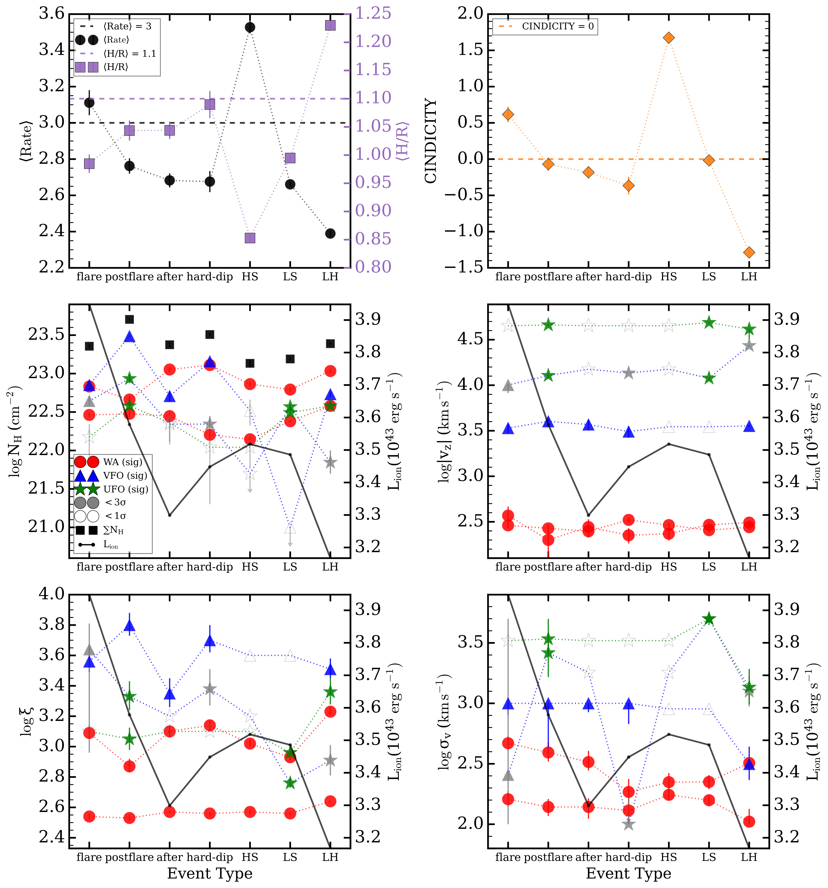
图注：The spectral and wind properties as a function of event type. The top left panel shows the mean count rate and hardness ratio. The top right panel shows the CINDICITY. The lower four panels show the wind column density ($\log{N_H}$), ionization parameter ($\log{\xi}$), line-of-sight outfow velocity ($\log{|v_z|}$), and turbulent velocity ($\log{\sigma_v}$). Circles, triangles, and stars represent WA, VFO, and UFO components, respectively, with dotted lines connecting the same component number across event types, as indicated in Table \(\ref{table:parameters}.\) Filled colored markers indicate significant detections (D.S > 3$\sigma$), filled gray markers indicate marginal detections (1$\sigma$ < D.S < 3$\sigma$), and open gray markers indicate weak/no detections (D.S < 1$\sigma$). Black squares in the second panel mark the summed column density. The black lines in the lower four panels show the total ionizing luminosity in each event type.
对应解读：对应“吸收参数随时间或状态变化图”，以及关于 NH、xi、vout、湍流速度是否协同变化的导读。
入选理由：该图把事件类型、计数率、硬度、CINDICITY 与风的柱密度、电离参数、视线外流速度和湍流速度放在同一诊断图中，并区分 WA、VFO、UFO 及显著性，是判断高速风是否随耀发后、低通量或硬度状态系统变化的核心证据。
来源与置信度：\(arxiv_source\)；high；\(arxiv_source\) / main.tex:figure[8]
Fig01
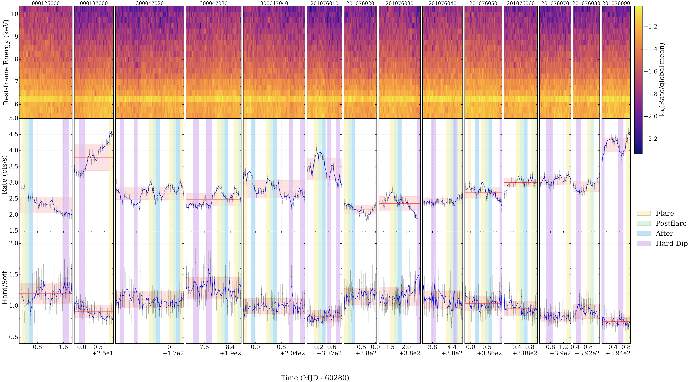
图注：Top Panels: Trailed spectra. Middle Panels: full band (2.4--17.4 keV) lightcurves. Bottom Panels: hardness ratios (8.8--11.8~keV / 3.0--4.0~keV)
对应解读：对应“长期和短时 X 射线光变曲线”以及图1导读中关于 14 次观测、耀发、低谷和硬度变化的检查。
入选理由：图中包含拖尾谱、2.4–17.4 keV 光变曲线和硬度比，直接展示 395 天观测中的时间采样、耀发/低谷结构和短时状态定义基础，是理解 10 ks 延迟窗口和后续时间切分是否由数据支持的入口图。
来源与置信度：\(arxiv_source\)；high；\(arxiv_source\) / main.tex:figure[1]
Fig11
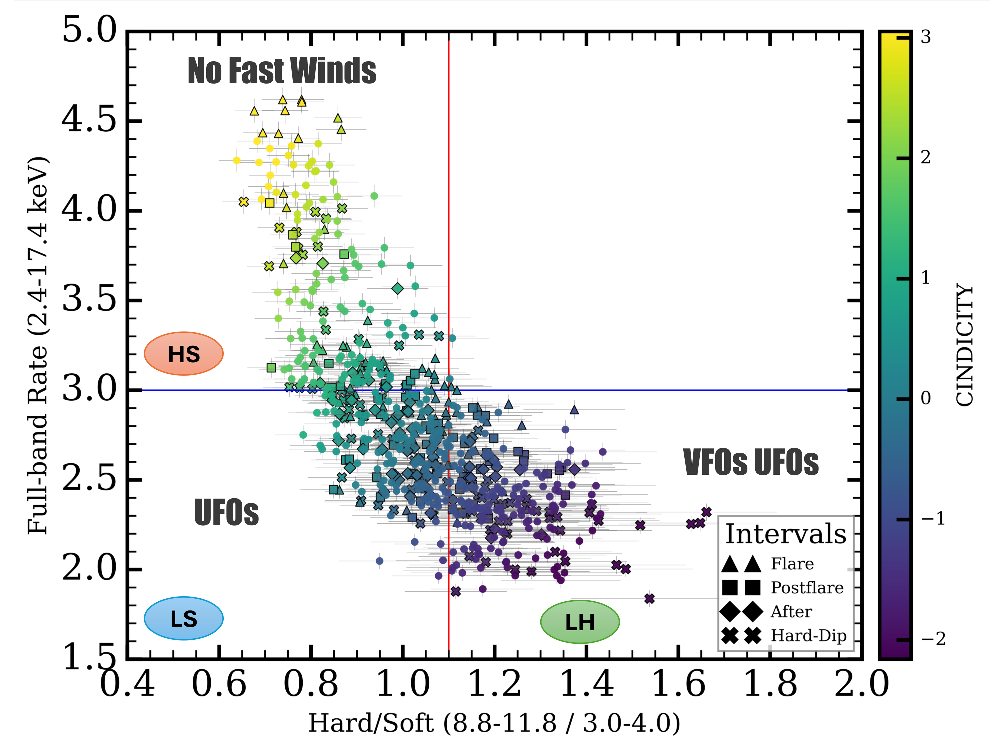
图注：Hardness--intensity diagram for all time bins, colored by CINDICITY. The horizontal and vertical lines mark the boundaries used to define the global spectral states: High--Soft (HS), Low--Soft (LS), and Low--Hard (LH). Different symbols denote the time-selected intervals (Flare, Postflare, After, and Hard-dip). The labels indicate the regions in which no fast winds, only UFOs, or both VFOs and UFOs are preferentially detected.
对应解读：对应“硬度—强度图或颜色—通量图”和图2导读中关于状态切分、阈值、低通量/硬状态与高速风出现区域的讨论。
入选理由：相比 Fig02 只显示全局均值和时间箱比例，Fig11 进一步标出 HS、LS、LH 边界、Flare/Postflare/After/Hard-dip 符号，并直接标注无快速风、仅 UFO、VFO+UFO 的偏好区域，更能支撑日报对状态分类是否自然以及高速风在哪些硬度—强度区域出现的解读。
来源与置信度：\(arxiv_source\)；high；\(arxiv_source\) / main.tex:figure[11]
Fig09
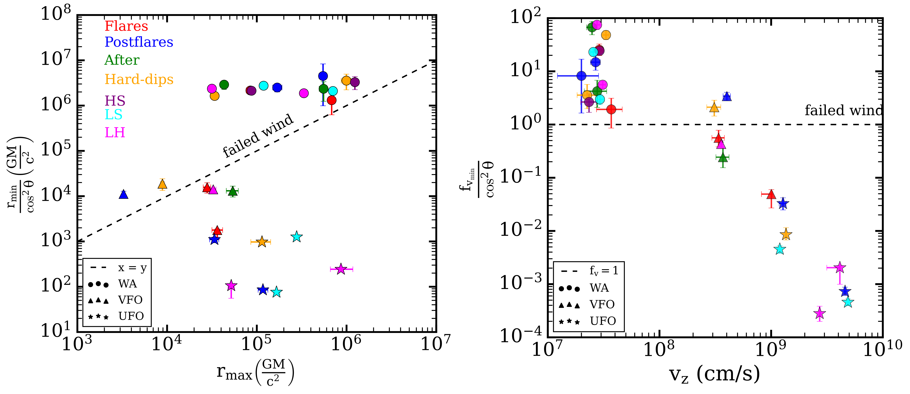
图注：Left panel: comparison of the escape-based lower limit to the launching radius, $r_{\rm min}/\cos^2\theta$, and the ionization-based upper limit, $r_{\rm max}$, for each outflow component, in units of $GM/c^2$. The dashed line marks equality. Circles, triangles, and stars denote WAs, VFOs, and UFOs, respectively, while colors indicate different event types and HID-selected spectra. Components above the equality line formally require $f_v>1$. Right panel: minimum volume filling factor, $f_{v,{\rm min}}/\cos^2\theta$, as a function of velocity. The dashed line marks $f_v=1$. Faster outflows require smaller filling factors, with UFOs occupying the lowest values, VFOs intermediate values, and WAs clustering near or above unity.
对应解读：对应详细解读中“何处发射”和“10 ks 响应约束发射半径”的讨论，也对应模型物理解释中的半径和覆盖/填充因子系统误差。
入选理由：该图比较逃逸速度给出的发射半径下限和电离参数给出的半径上限，并给出最小体积填充因子随速度变化，直接支撑 WA、VFO、UFO 是否位于不同尺度以及高速流是否需要小填充因子的物理判断。
来源与置信度：\(arxiv_source\)；high；\(arxiv_source\) / main.tex:figure[9]
Fig10
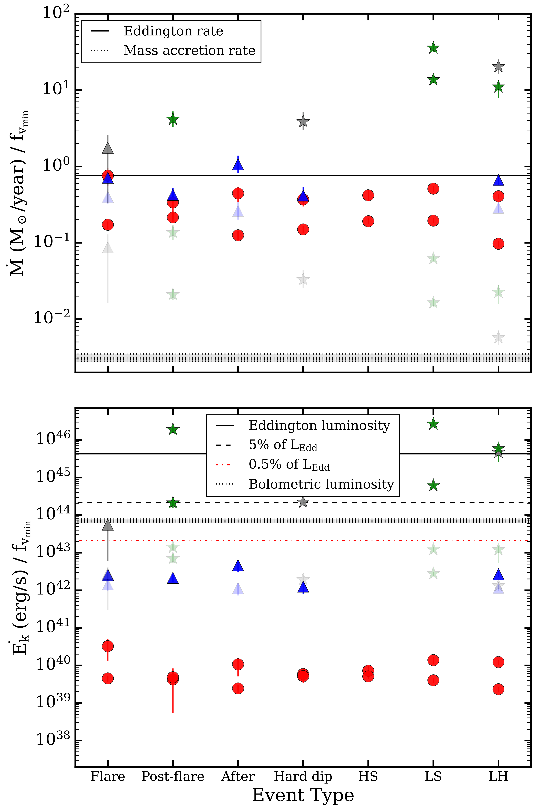
图注：Upper panel: mass outflow rate, $\dot{M}/f_{v,{\rm min}}$, as a function of event type. Lower panel: kinetic power, $\dot{E}_{\rm k}/f_{v,{\rm min}}$, as a function of event type. Circles, triangles, and stars denote WAs, VFOs, and UFOs, respectively. Filled markers show the nominal values assuming $f_v=1$, while the lighter markers show the values corrected by the minimum volume filling factor (only when their $f_{v,{\rm min}<1}$). The grey markers show the components with $1\sigma <$ D.S < $3\sigma$. The solid horizontal lines mark the Eddington accretion rate (upper panel) and Eddington luminosity (lower panel). The dashed and red dotted lines in the lower panel mark 5\% and 0.5\% of $L_{\rm Edd}$, and the dotted band marks the bolometric luminosity range. WAs remain energetically weak, while VFOs and especially UFOs dominate the outflow energetics and can approach or exceed the nominal feedback threshold.
对应解读：对应“动量率或动能率与辐射动量比较图”以及关于高速 Fe K 风能量学和磁驱动/反馈阈值的讨论。
入选理由：图中给出质量外流率和动能功率随事件类型的变化，并区分 WA、VFO、UFO、显著/边缘探测及体积填充因子修正；它最适合检验高速外流是否主导能量学、是否接近反馈阈值，以及填充因子系统误差对结论的影响。
来源与置信度：\(arxiv_source\)；high；\(arxiv_source\) / main.tex:figure[10]
强相关工作
这篇工作属于 NGC 4151 同一源的高分辨率 X 射线吸收研究谱系，也属于更广泛的 Seyfert 温吸收体和 UFO 研究谱系。应把它与 Chandra/HETGS、XMM-Newton/RGS、Suzaku、NuSTAR 对 NGC 4151 的历史观测放在一起看：历史数据提供长期平均的吸收层、反射和遮挡背景，XRISM 的新增价值在于微量热计分辨率和多次状态切分。建议检索关键词包括“NGC 4151 warm absorber Chandra HETGS”、“NGC 4151 UFO Fe K”、“NGC 4151 changing look AGN”、“XRISM Resolve AGN disk wind”。
在理论上，它与磁离心盘风、磁压驱动风、辐射线驱动和热风模型都有关系。若外流动量率超过 \(L_{\mathrm{bol}}/c\) 的单次辐射动量预算，磁驱动自然更有吸引力；但低通量窗口中吸收更明显、风局部团块化，又与辐射压不稳定和遮挡几何有关。潜在张力在于：传统辐射驱动模型要求合适的电离屏蔽以避免过电离，而高电离 Fe K UFO 又要求强 X 射线照射；磁模型能解决加速问题，但需要解释为什么可见吸收随耀发后 \(10\,\mathrm{ks}\) 变化如此明显。建议同时检索“magnetocentrifugal disk wind AGN”、“radiation pressure clumpy disk wind”、“AGN UFO momentum flux magnetic driving”、“absorption measure distribution AGN winds”。
同一事件 / 同类源线索：
- https://arxiv.org/abs/2608.11315
- https://ui.adsabs.harvard.edu/search/q=NGC%204151%20warm%20absorber
- https://ui.adsabs.harvard.edu/search/q=NGC%204151%20ultra%20fast%20outflow
- https://heasarc.gsfc.nasa.gov/docs/xrism/
相似工作：
- https://ui.adsabs.harvard.edu/search/q=XRISM%20Resolve%20AGN%20wind
- https://ui.adsabs.harvard.edu/search/q=Seyfert%20ultra%20fast%20outflow%20Fe%20K
- https://ui.adsabs.harvard.edu/search/q=AGN%20warm%20absorber%20high%20resolution%20X-ray%20spectroscopy
基础理论 / 方法工作：
- https://ui.adsabs.harvard.edu/abs/1982MNRAS.199..883B/abstract
- https://ui.adsabs.harvard.edu/search/q=AGN%20disk%20winds%20magnetocentrifugal%20review
- https://ui.adsabs.harvard.edu/search/q=AGN%20warm%20absorber%20review
- https://ui.adsabs.harvard.edu/search/q=ultra-fast%20outflows%20AGN%20review
相反观点 / 张力线索：
说明
评分由 LLM 给出初评，再由本地阈值策略过滤；IACT、TeV 伽马射线和高能中微子天文学按重点方向处理。